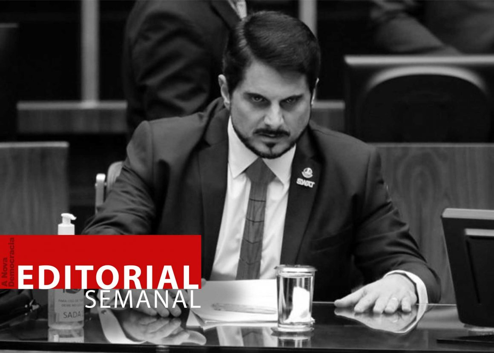

[This lan. PDF][This lan. ODT][This lan. MD][This lan. TXT][This lan. TXT LIST]
Please select your language 请选择你的语言:
作者: maoist
描述: 在安萨尔多（Ansaldo）的意外，西蒙妮·博诺里（Simone Bonori）在生命与死亡之间挣扎：工人的罢工和游行。 从西部到Sampierdarena的游行...。
时间: 2023-02-22T12:31:00+01:00
图片: ['sciopero-incidente-simone-bonori-791278.jpg', 'sciopero-incidente-simone-bonori-791288.large.jpg', 'sciopero-incidente-simone-bonori-791287.large.jpg', 'sciopero-incidente-simone-bonori-791283.large.jpg', 'sciopero-incidente-simone-bonori-791280.large.jpg', 'generico-febbraio-2023-791284.jpg']
昨天下午，在菲吉诺的Ansaldo Energia工厂的空中受伤，Sanmartino医院Simone Bonori的复苏部门的生与死之间的战斗。安全。 “ Ansaldo：机械七十年代和零投资，可耻!” 它在今天早上在Fegino大门前带来的横幅上读。 “快来西蒙妮，我们都是伯爵”，另一个横幅，一个绝望的信息，鉴于人的条件。工人脸部受到打击。 Bonori处于药理昏迷状态。 圣马蒂诺医学公告说：“他的病情仍然存在。 36年的 - 已经在Adansaldo Energia工作了大约三年。 他住在Pra'后面的Podestà。 “今天是悲伤的一天，但也是愤怒的一天 - 他说 - 我们不能反思的曼农司法机构将确定发生的事情的责任，1979年西蒙妮·妮德尔(Simoneèdel)在1979年开始使用的汽车44岁，任何人都可以理解您可以在44年前制造的机器的安全程度，即使它经过认证”。一个投资问题，我们必须花钱，无论是新机械还是我们不再工作的机械，他们都会工作。 * **

News Source: https://proletaricomunisti.blogspot.com/2023/02/pc-22-febbraio-grave-incidente.html
作者: Rosa Minine
描述: 这位歌手，词曲作者和吉他手Sueldo Fernandes在《和版本》中接受采访，刚刚发行了他的第三张专辑《农村调音》
发布时间: 2023-02-22T16:59:15-03:00
修改时间: 2023-02-22T17:15:15-03:00
更新的时间: 2023-02-22T17:15:15-03:00
图片: ['CentroMusicaCariocaArturTavola23Fev-720x480.jpg']
部分: Agenda Cultural
标签: ['Agenda Cultural', 'cantor', 'compositor', 'Lançamento', 'plataformas streaming', 'Sintonia Rural', 'Sueldo Fernandes', 'terceiro álbum']
类型: article
 这位歌手，词曲作者和吉他手 Sueldo Fernandes 在《和版本》中接受采访，并刚刚发行了他的第三张专辑乡村Tuning ，自上次02/08以来，在所有流媒体平台上都可以使用。 Odisco拥有10张版权和未发行的歌曲：“最近已经意识到的作品，有些自职业生涯开始以来，例如撕裂的辅助”；“说”和“ last sword”；所有基于艺术家本人的歌曲录制的歌曲以及他或打击乐器主义者与天然乐器的独家参与。他的歌曲在他的旋律美学中带来了区分元素，并以确认其偶然性的安排；促进渴望之间的对话，在声音强度上，令人震惊的是那些遥不可及的人。探索来自Oarrata的音乐流派 - PE，区域音乐，Caipira Pagoda，Viola Fashion和Countryman；从未在巴西东南部展示给观众的歌曲。这张专辑在其所有职业中都带来了其最佳录制内容；突显歌词，旋律，和声，和声，和声，和声，和声进行安排，其解释远不止于定义； 道路”，顾问艺术家宣布。
这位歌手，词曲作者和吉他手 Sueldo Fernandes 在《和版本》中接受采访，并刚刚发行了他的第三张专辑乡村Tuning ，自上次02/08以来，在所有流媒体平台上都可以使用。 Odisco拥有10张版权和未发行的歌曲：“最近已经意识到的作品，有些自职业生涯开始以来，例如撕裂的辅助”；“说”和“ last sword”；所有基于艺术家本人的歌曲录制的歌曲以及他或打击乐器主义者与天然乐器的独家参与。他的歌曲在他的旋律美学中带来了区分元素，并以确认其偶然性的安排；促进渴望之间的对话，在声音强度上，令人震惊的是那些遥不可及的人。探索来自Oarrata的音乐流派 - PE，区域音乐，Caipira Pagoda，Viola Fashion和Countryman；从未在巴西东南部展示给观众的歌曲。这张专辑在其所有职业中都带来了其最佳录制内容；突显歌词，旋律，和声，和声，和声，和声，和声进行安排，其解释远不止于定义； 道路”，顾问艺术家宣布。
听：https：//open.spotify.com/album/0veszplvqeii6q9fiemoa1？
News Source: https://anovademocracia.com.br/sintonia-rural-terceiro-album-de-sueldo-fernandes/
作者: maoist
描述: 没有任何
时间: 2023-02-22T19:03:00+01:00
图片: ['loc%20guerra%20IT_page-0001.jpg']

News Source: https://proletaricomunisti.blogspot.com/2023/02/pc-22-febbraio-le-due-giornate-contro.html
作者: DEM VOLKE DIENEN
时间: 2023-02-22T19:40:53+00:00
图片: []
标签: ['USA', 'Abschiebung', 'Trump', 'Migration', 'Biden', 'Asylrecht']
类别: None
乔·拜登(Joe Biden)周围的美国政府于1月21日星期二提出了新的移民法规。 经过30天的讨论阶段，美国移民政策目前仍由特朗普政府时期决定。 拜登(Biden)不仅通过这项新规定进入了特朗普的脚步，没有 - 这种新的庇护政策仍然比特朗普以往任何时候都更为反动。
政治以绰号“标题42”结束，在过去的三年中，作为美国电晕措施的一部分，庇护的权利能够覆盖庇护的权利。拒绝进入该国。 根据[美国英寸和限制保护行为]的数量(https://www.cbp.gov/newsroom/stats/nationwide-encounters)自2020年3月呼吁这项规则以来的三年中，已经拒绝将250万寻求庇护者提供给美国入境。
特朗普领导下的“标题42”的吸引力为他提供了很多时间。作为拜登竞选活动的一部分，这项移民政策应该长期保留。特朗普本人，但最终应该掉下来，新事物应该是：甚至有些东西。更多的反动。
从5月起，不再有可能在美国边界内申请庇护。 这只有可能在国外，因此使得不可能立即从需求来到该国的难民申请庇护。 为此，应该引入一个应用程序，您可以在敏捷的情况下进行预约，但在Grennzuit之前。 违反了这项新的移民法规已导致5年的锁定，然后您才能申请另一个锁定。当然，显然是愤世嫉俗的事情是，这项新法律是由现任美国总统乔·拜登(Joe Biden)启动的。 正是贝迪德(Bidden)的整个选举胜利是基于它的，至少“没有特朗普”是基于的，比以往任何时候都引入了更加公然，更反动的庇护政策。甚至更多。两者的移民政策是，竞标并不经常在Großenwahn中不断降低，而不是想在derus-mexico border-_ _ _noch not_上建造一堵巨大的墙。
News Source: https://www.demvolkedienen.org/index.php/de/t-international/7500-neue-asylpolitik-in-den-usa-biden-oder-trump
作者: DEM VOLKE DIENEN
时间: 2023-02-22T23:15:24+00:00
图片: ['Europa_Solidaritätsveranstaltungen_von_AGEB_mit_den_Erdbebengebieten_in_der_Türkei.png']
标签: None
类别: None
 作为正在进行的团结工作的一部分，ABES于2月18日至19日和瑞士组织了奥地利和瑞士的活动。 Diesolidarity电话得到了广泛的认可，许多人跟随了呼叫，并在集体工作中分类了好处。
作为正在进行的团结工作的一部分，ABES于2月18日至19日和瑞士组织了奥地利和瑞士的活动。 Diesolidarity电话得到了广泛的认可，许多人跟随了呼叫，并在集体工作中分类了好处。
苏黎世和巴塞尔的团结事件在瑞士组织。 这样的事件发生在奥地利的因斯布鲁克。除了收集捐款外，还计划进一步的活动来支持土耳其生活中的迪沃姆地震。在一个普通的弗里斯克(Frihstuck)之后这样的Chesolidarity活动会定期进行。 参与者和向组织捐款的人表示感谢。 该活动以信息状态和各种团结事件计划在未来几天计划的信息结束。
作者: Philippine Revolution Web Central
发布时间: 2023-02-22T93:00:00-04:00
修改时间: None
描述: 通过菲律宾的部队，军事和核武库的存在，美国将整个亚洲地区置于“核大教命的边缘”。 这是公关的警告
图片: ['us-china-tensions.png']
类别: ["People's Struggles"]
类型: article
 通过在菲律宾的部队，军事和核阿森纳尼托在场，美国将整个亚洲地区置于“核大战的边缘”上。 这是教授的警告。 罗兰·辛布兰(Roland Simbulan)在2月4日发起的网络研讨会上，题为“反流：外交政策和反帝国主义斗争。
通过在菲律宾的部队，军事和核阿森纳尼托在场，美国将整个亚洲地区置于“核大战的边缘”上。 这是教授的警告。 罗兰·辛布兰(Roland Simbulan)在2月4日发起的网络研讨会上，题为“反流：外交政策和反帝国主义斗争。
他说：“菲律宾在美国和下巴之间的严格竞争是由于其地理位置所在地。” 该国长期以来一直是美国“核基础设施的一部分，该基础设施是携带核武器并运行核核武器的大型战争的港口。 “我们的一部分(pilipinas)由于《共同的国防条约》，访问武力和增强的国防合作协议，在中国的进攻性第一岛链中。”
通过这些条约和协议，美国军方维持了菲律宾军事霸权，尽管该国在该国没有大型永久军事基地。
“美国长期以来，美国一直将菲律宾作为其长期安全的关键地点。” 辛布兰。 菲律宾被称为亚洲菲律宾的“美国”，它不仅在南中国海，亚太地区和中东的状况不仅是海事和飞机的流行。
美国的控制及其在菲律宾的“钢铁关系”并没有对最近总统罗德里戈·杜特尔特(Rodrigo Duterte)的不满和虚伪感到失望，以治愈中国。
实际上，美国在杜特尔特(Duterte)的任期内在菲律宾持有。根据其任期，旧的和新的米里亚特(Miliatrt)的任期是在其任期下举行的。 在他的领导下，他还开始了EDCA ATMDT的“重新审判”，以向美国的美国提供额外的特权和范围内资源。 他还开始在他仍然是使用美国公司Cerberus的谈判时，Subic的Subic Shipyard用于维修，加油和USNAVY。这些访问已在该国的前五个美国军事基地中建立了施工，将花费1亿美元，而他们的部队和武器还可以设置另外四个地点。这些地点为美国的运营带来了优势如果在台湾奥哈邦进行竞争，美国海军正在南中国海进行挑战性的“行动”，迅速发起。
2月4日，USAPARA的高架办公室抵达菲律宾。启动更多Masisinsin和大型美国军方在菲律宾的计划，包括Balikatan2023。20223。Aft2022年宣布，法新社已宣布将有469名美国军方有469名。该国2023年的活动高于2022年的461次美国军事行动和2021年的353。
其中包括的演习是美国军事进攻的一部分，以促进中国。 他们是共同的，专门针对战争中的成千上万的培训师(战争练习)美国是在该地区推出的。
尽管在4月第38系列Balikatan系列，即美国和菲律宾武装部队之间的年度“军事训练”，但美军已经在菲律宾。 2月20日，美国和菲律宾军队发起了一场战斗功能交流，这是为期3天的会议，为Salaknib 2023做准备，这是Balikatan之前和之后进行的两服务培训。 这项培训将由美国25号ID的3,000名士兵和菲律宾的第5号ID和第1旅战斗队加入。 萨拉克尼(Salaknib)于3月5日开始20天。
同时，Balikatan 2023将由16,000名士兵加入，其中大部分历史。 练习将在北伊洛科斯(Ilocos Norte)和台湾海峡的群岛(Fugaat Calayan)的Batanes举行。除了练习外，美国和菲律宾人的关节还将在南中国海再次发射。 它将直接涉及菲律宾部队在中国的船只和部队中的作用。
美国一位副总统哈里斯(Harris)来到该国时被推动，因为美国在解决菲律宾危机的面纱上建立了核电站。 根据“ 123关于民核能源合作协议的协议谈判”，将在该国建立核电站(小模块反应堆)由美国陆军开发，并在其军事基地进行了测试。
2月，Pangasinan人民为地方政府的环境罢工，揭示了建造六个核的建设，所有核武器都在Pangasinan，Pangasinan。 该镇面临着Itosa Lingayen Gulf，这是该国最富有的渔业之一。
Makabayan代表警告说，两人在该国使用美国技术 - 民事和军事技术。 美国入侵计划的许多方面在战争中很容易使用，甚至是平民的竞争者。
实际上，美国现在正在开发Pele项目，旨在铺设“移动核电站”或“战场核电反应堆”，这是其在亚洲地区的“战区”的一部分。 似乎美国将使用菲律宾作为该项目的实验室，该实验仍在实验中。
目前，使用核武器的可能性正在增加乌克兰的美国和北约在朝鲜半岛，台湾海峡南海。 因此，人民需要阻碍它变得越来越紧迫。
据教授说：“核战争的日益严重的威胁正在推动所有热爱世界和平的人防止其可能性。” 辛布兰。 “让我们防止美国的挑衅以及中国的军事行动，这可能会在一场粗鲁的权力战争中爆发。”
作者: Philippine Revolution Web Central
发布时间: 2023-02-22T96:00:00-04:00
修改时间: 2023-02-23T05:12:38+00:00
描述: 在参议院昨天在RCEP（区域综合经济合作伙伴关系）的评级中，小马科斯政权进一步哀悼。 在菲律宾人民的饥饿和贫困中，尤其是农民
图片: ['makibaka-makabayang-kilusan-ng-bagong-kababaihan-1024x502.png']
类别: ['Economy', 'Politics']
类型: article
 参议院昨天在RCEP的评级(区域综合经济合作伙伴关系)，小马科斯政权进一步发展。 在菲律宾人民的饥饿和贫困中，尤其是农民。
参议院昨天在RCEP的评级(区域综合经济合作伙伴关系)，小马科斯政权进一步发展。 在菲律宾人民的饥饿和贫困中，尤其是农民。
尽管在菲律宾围绕RCEP的许多部门反对，但该政权仍推动了批准，以跟上亚太地区的经济，并从大麻症中恢复过来。 RCEP是东盟国家以及包括中国，日本，韩国，澳大利亚和新西兰在内的“自由贸易”的共识。(相当于全世界30％)Attake GDP售价$ 26.1 t(世界上有29％)，这在欧洲和美墨 - 加拿大协议中更大。 它也是美国作为世界领先经济的中国工具。
包括RCEP，产品的进口更有可能被强加，否则关税非常低。 因此，我们的农业生产将更有可能被进口更便宜，特别是这是政府对Maykrisis食品的持续解决方案。 它不能解决大米，肉，糖或洋葱的危机。 相反，它将杀死许多菲律宾人的生计。 而且，本地行业更有可能(中小型企业).
木偶政权代表发展，由于WTO失败和菲律宾达成的其他经济协议，木偶政权坚持了RCEP协议。 它提供了自由，以便帝国主义村民能够负担更多的自然资源，资产阶级将促进他们的利润，并拥有官僚资本家的巨大罪行。依靠外国投资以及资本主义制度危机的欺负的经济。
由于我们自己经济的本质，由于帝国主义秩序占上风，因此任何权力的政权将永远不会执行政策。 因此，人民必须反对并与RCEP和其他类似的状态崩溃。
同时，革命者的激进主义者应促进和完善与该政权的新自由主义政策相反的国家工业化和土地改革的呼吁。 其中包括在当地行业和外国投资法规中获得补贴和保护的呼吁，并专注于加强当地工业和在该国创造就业机会。 马基巴卡(Makibaka)呼吁这一会员资格将这种呼叫教育带给我们的宣传宣传，随着我们继续到达大量人民。我们继续在大众组织和革命组织中唤醒他们参与其中的当地人，这对人民来说很困难，并动员他们踏上了菲律宾革命对社会主义的成功。 #
News Source: https://philippinerevolution.nu/statements/pagratipika-ng-rcep-higit-na-pahirap-sa-mamamayang-pilipino/
作者: Philippine Revolution Web Central
发布时间: 2023-02-22T97:00:00-04:00
修改时间: 2023-02-23T05:17:27+00:00
描述: 菲律宾 - 帕拉万的民族民主阵线正在呼吁帕拉维尼奥和全国人民支持农民的斗争，而布鲁克的nathical palaw＆＃039;
图片: ['ndf-palawan-1024x576.png']
类别: ['Enivronment', "People's Struggles"]
类型: article
 菲律宾 - 帕拉旺·萨玛·帕拉维尼奥(Philippines-Palawan SamaPalaweño)和整个国家的民主民主党阵线呼吁在布鲁克(Brooke's Point)在布鲁克(Brooke's Point)反对伊普兰镍公司(Ipilan Nickel Corporation)的灾难性行动的情况下支持农民和土著人的斗争。 自2月18日以来，Mina's Mina的Mina一直在约会Brgy。 重要的是要维护国民政府对公司的运营运作，这是整个城镇在一月份发生的强烈崩溃的结果。
菲律宾 - 帕拉旺·萨玛·帕拉维尼奥(Philippines-Palawan SamaPalaweño)和整个国家的民主民主党阵线呼吁在布鲁克(Brooke's Point)在布鲁克(Brooke's Point)反对伊普兰镍公司(Ipilan Nickel Corporation)的灾难性行动的情况下支持农民和土著人的斗争。 自2月18日以来，Mina's Mina的Mina一直在约会Brgy。 重要的是要维护国民政府对公司的运营运作，这是整个城镇在一月份发生的强烈崩溃的结果。
布鲁克的观点的斗争是有道理的。 回应公民身份的来源。 这种性质被公司和该省的其他省级公司摧毁，摧毁了森林和大块土地供采矿的爆炸，这并不能从公民那里受益。
尽管没有市长的许可证，但INC运营被用作采矿暂停前杜特尔特政权的离开。 它涉及反应环境和自然资源部等反动政府机构(登)在国家土著人民委员会(ncip)免费，事先和知情同意(fpic)来自人民。 除了公司外，卢西奥坦的大型矿业公司还将返回，其他两家Mina Mina的公司将进入布鲁克的观点。 当他们继续时， 在雨季，布鲁克的观点会更糟。 发生这种情况时，将在布鲁克地位的广阔稻田，椰子和香蕉将在整个省份的生计去世。
作者: Philippine Revolution Web Central
发布时间: 2023-02-22T98:00:00-04:00
修改时间: 2023-02-23T05:30:38+00:00
描述: 与世界人民一致，南方的菲律宾共产党袭击了美国统治下乌克兰正在进行的帝国间战争。 同时，太难了
图片: ['cpp-southern-tagalog-1024x576.png']
类别: ["People's Struggles", 'Politics', 'Regions']
类型: article
 世界上的公民，南部菲律宾的共产党袭击了美国正在进行的帝国间战争，由美国领导。 同时，我们还强烈批评了美国在中国亚太地区另一场战争领域的持续动机。
世界上的公民，南部菲律宾的共产党袭击了美国正在进行的帝国间战争，由美国领导。 同时，我们还强烈批评了美国在中国亚太地区另一场战争领域的持续动机。
自乌克兰战争爆发以来已经一年了。 在首次进行和平谈判努力之后，美国北约针对俄罗斯发动的代理战争逐渐变成了很长时间。
2022年4月，俄罗斯同意在土耳其倡议中进行谈判，但英国总理鲍里斯·约翰逊(Boris Johnson)乌克兰·萨苏尔德(Boris Johnson)乌克兰·萨苏尔德(Boris Johnson)总裁沃迪米尔·泽伦斯基(Volodymyr Zelensky)拒绝了这一谈判。 美国北约没有增加，而是通过在乌克兰的政府和武装部队的幼犬中倾注数十亿个武器来加强战争。国家大会重新开放和平谈判并实施停火以完成格拉萨乌克兰。
这场战争遭受了乌克兰和邻近城镇的平民公民。 截至2月12日，联合国人权高级职员办公室记录了18,955人伤亡，其中7,199人被杀，11,756人受伤。 除此之外，由于战争，多达790万名人被撤离。 据乌克兰总理史密尔(Shyhal)称，直到2022年12月，国民经济的国民经济中有超过7000亿美元的资金超过7000亿美元。乌克兰人讨厌Zelenzky的Uscongress英雄，他除了美国 - 北约的盲人代理人之外别无其他人。 Zelensky对Amonito有很大的支持，以换取权力和“荣誉”，而牺牲了他的警卫。 另一方面，美国是激烈的危机，因此有义务继续在雷鸣般的经济中以安格克兰(Angukraine)为反对俄罗斯的先驱。 由于乌克兰的战争，美国主要国防公司评估了其政府是其创造产品的主要购买者。 洛克希德·马丁(Lockheed Martin)，雷神技术(Raytheon Technologies)，波音，诺斯罗普曼(Northropgrumman)和通用动态的五项防御能力在2022年底之前仍领先收入。 美国政府在国防上提供的年度耗资7000亿美元主要是这些公司的收入和利润。
在继续遭受自己的人民的影响的过程中，美国的需求越来越多。 2022年，美国经济的经济衰退始于其国内生产总值的负面增长在今年接下来的两个房间中。担心其经济衰退会开始2023年第二部分的经济衰退。
同时，乌克兰的代理战争就像是对中国的西西亚太平洋。 中尉 gen 詹姆斯·比尔曼(James Bierman)是NGUS武装部队和日本海军陆战队的第三海军陆战队远征军的指挥官，美国像在乌克兰那样计划了对中国的战争。菲律宾。 Gen也通过五角大楼的内部顺序证实了这一点。 空气流动司令部负责人Mike Minihan指出，预防中国是他们的主要目的，有必要击败它。
这是美国在印度太平洋地区的存在 - 塔维旺，菲律宾，日本，新加坡和韩国，被认为是第一个围绕中国的岛屿。 美国军事活动正在增加和增加，并提到木偶国家。在菲律宾，军事存在的扩大与美国与反动GRP之间的协议共存。 其中包括《互助条约》，《访问部队协议》和《最后的防御合作协议》(EDCA). Sa kabila nang pagpapatalsik ngmamamayang Pilipino sa base militar, nagagawang ikutan ng US ang lahat nglimitasyon sa pagpapanumbalik nito sa bansa sa pamamagitan ng EDCA. Mula nangipatupad ito, tuluy-tuloy nang ginagamit ng US ang Basa Air Base sa Pampanga;Antonio Bautista Air Base sa Puerto Princesa City, Palawan; Benito Ebuen AirBase sa Mactan Island, Cebu; Lumbia Airfield sa Cagayan de Oro City; junglebase sa Fort Laur sa Nueva Ecija at ilan pang "sikretong base" nito tulad ngNaval Station Carlito Cunanan sa Ulugan Bay, Palawan. Nitong buwan lamang,inianunsyo ni Marcos Jr. na madadagdagan pa ng lima ang istasyon ng EDCA sabansa matapos ang pagbisita ni US Defense Secretary Lloyd Austin.
Bago pa ito ang pagbisita ni US Vice President Kamala Harris sa bansa na dalaang kasunduan hinggil sa pagtatayo ng missile systems sa bansa. Ang planongmissile launching systems at iba pang pasilidad militar ng US na itinatayo atitatayo pa sa Pilipinas ay magsisilbing magnet sa mga atakeng Chinese labanPilipinas. Garapalang nilalabag ng US ang soberanya ng Pilipinas sa paggamitsa bansa bilang base para sa paglulunsad ng mga dayuhang gera nito.
Sa gitna ng lahat ng ito, ang mamamayan ng buong daigdig ang nagdurusa sapagpapasasa ng mga imperyalistang bansa sa pangunguna ng US. Ang ipinataw namga sangsyon sa Russia ay ibayong gumatong sa pandaigdigang krisis dahil sasinira nito ang suplay sa buong daigdig laluna sa larangan ng produksyon nglangis, trigo, abono, rare earth metals para sa produksyon ng microchips atartificial intelligence na kailangan sa industriyang militar at iba pang hilawna materyales na pangunahing nagmumula sa Russia. Lumikha ito ng artipisyal nakawalan at/o kakulangan ng suplay ng langis, pagkain at iba pang hilaw namateryales sa buong mundo.
同时，Inspan，乌克兰和乌克兰国家的人民正处于最大的暴力和贫困之中。随着帝国主义正在增加劳动和建立社会的能力，它警告人们尤其是人民的昂贵战争。
人民必须束缚并团结起来，以与世界上人类不知所措的所有形式的叛乱 - 帝国主义战争作斗争。 为此，有必要打电话给世界以防止跨主义战争，如果无法阻止帝国间战争的采访者赢得其人民的革命压迫，以实现民族独立，民主和社会主义。团结人类在重新宣传全球社会主义革命以推翻帝国主义 - 全球资本主义的后期和垂死的阶段，这是全球暴力，剥削，压迫和人类贫困的根源。###
作者: Philippine Revolution Web Central
发布时间: 2023-02-22T99:00:00-04:00
修改时间: 2023-02-23T05:33:07+00:00
描述: 菲律宾的共产党与杜马加特，雷蒙多和受dample项目影响的所有人民的斗争团结在一起。 聚会站起来
图片: ['cpp-southern-tagalog-1024x576.png']
类别: ['National Minority', "People's Struggles", 'Regions']
类型: article
 菲律宾的共产党在杜马加，雷蒙塔多和受该死的左水坝进程影响的所有人的优势之外团结起来。 党和TK的整个革命运动一直坚持认为，对于Rizal和North Quezon人民，该项目没有其他好项目。
菲律宾的共产党在杜马加，雷蒙塔多和受该死的左水坝进程影响的所有人的优势之外团结起来。 党和TK的整个革命运动一直坚持认为，对于Rizal和North Quezon人民，该项目没有其他好项目。
对北奎松和黎刹的土著人民的持续抗议证明是杜马加特和雷蒙达多的领导，政府的帝国主义机构宣布，受该项目影响的所有家庭宣布所有家庭都受到了影响。 大都会供水系统显然是发明的(MWSS)环境与自然资源部(登)在国家土著人民委员会(ncip)在一份虚假的报告中，受影响的公民提供该项目。 以前的美国 - 杜特尔特政权和现任美国 - 马尔科斯II制度以及当前在马尼拉的射击水短缺的项目运营中运营的现任美国 - 马尔科斯政权。他们希望在该项目中占领巨大的罪魁祸首作为最近美国 - 杜特尔特·萨奇纳(Sachina)的暴政政权的债务。 因此，人们最近在人民反对派中的舞蹈盘，暂时是暂时的团体，这并不奇怪。
大坝将征服一些社区，包括他们的生计以及艾格斯特人的祖先土地和雷蒙达多在塔纳(Remontado)，瑞扎尔(Rizal)伊扎尔·纳坎(Rizal Atgeneral Nakang)和奎松(Quezon)的Infanta。 远离所谓的政府人数，只有15个家庭受到了400多个家庭正在社区的影响。 据估计，多达100,000人受到该项目的影响，尤其是在灾难期间。 纳坎将军的公民身份已经意识到大坝造成的损害。 一系列台风沉入Infanta镇以及纳卡尔将军和皇马镇的某些地区，并没有忘记2004年发生的悲剧。反动国家迫切希望代表外国资本家和大规模资产阶级 - 科罗拉多州的自私利益继续进行项目。 为了防止人民的斗争，第80和第一IBPA的单位处于奎松和黎刹的范围内，这些部队在发起无与伦比的军事行动和重新编写的社区支持计划行动方面继续播种恐怖。
人民应该支持杜马加特·阿特里蒙塔多(Dumagat Atremontado)的少数群体，十个黎刹(Rizal)和奎松(Quezon)的人将受到左水坝的影响。 在皇帝，英塔塔(Infanta)和奎松(Quezon)的纳卡尔(Nakar)的塔尼(Tanay)地方政府应在此过程中举行，以反对将其人民处于危险之中的项目。 为了人民的福利，他们必须团结人们对美国 - 马尔科斯二世政权及其帝国主义机构的团结。 同时，应将他们撤离到该项目周围的少数民族社区和农民的米塔部队。
作者: ΚΚΕ(μ-λ)
时间: 2023-02-22T99:00:00-04:00
描述: 我们以极大的悲伤得知，在激烈而不平等的战斗中，他为维持生命而战斗后，他的早期损失了Sergios Marouda的早期损失，塞尔吉斯·莫拉达（S. Sergios Marouda）是劳动运动的激进分子，也是午睡的成员。 KKE（M-L）组织对他的家人表示最热烈的慰问，并为此午睡。
图片: ['sergios-maroudas.jpg']
类型: article
 我们以极大的悲伤得知，在激烈而不平等的战斗中，他为维持生命而战斗后，我们被告知了Sergios Marouda的早期损失，这是劳动运动的战士，也是午睡的成员。
我们以极大的悲伤得知，在激烈而不平等的战斗中，他为维持生命而战斗后，我们被告知了Sergios Marouda的早期损失，这是劳动运动的战士，也是午睡的成员。
塞尔吉奥斯(S. Sergios)是慷慨地提供该运动的战斗机之一，因此他对政治和更广泛的社会都有特殊的位置和欣赏。
他的器官过早地死亡后，他的器官的贡献是献给人类的人，这是我们所有人最大的理想，我们正在为共产主义的观点而苦苦挣扎。
KKE的Larissa组织(M-L)它在家庭和午睡中表示最温暖的慰问。对于这一巨大的损失。
我有22/02/2023
News Source: https://www.kkeml.gr/λαρισα-για-τον-σ-σέργιο-μαρούδα/
作者: Rosa Minine
描述: 02/23，19H，在里约热内卢的里约热内卢音乐中心ArturdaTávola中心，与吉他手一起演奏乐器表演三部曲摇滚和乐团
发布时间: 2023-02-23T00:05:00-03:00
修改时间: None
更新的时间: None
图片: ['CentroMusicaCariocaArturTavola23Fev.jpg']
部分: Agenda Cultural
标签: ['Agenda Cultural', 'argentino', 'arranjador', 'cantor', 'Centro Música Carioca Artur Távola', 'compositor', 'naturalizado brasileiro', 'Trilogia Rock Orquestra', 'Victor Biglione']
类型: article
 照片：活动的披露
照片：活动的披露
02/23，19H，在里约热内卢的音乐中心ArturdaTávola的中心演出乐器表演摇滚三部曲和乐队 。 “重读一些最奉献的图标Dorock：LED Zeppelin，Who(通过1969年发行的摇滚歌剧“汤米”)Ejimi Hendrix，吉他手Victor Biglione与乐团一起将摇滚变成了由各个年龄段的音乐风格，在巴西音乐界都很热。 这种情况可以配备交响乐器，再加上三人品尝，双低音和鼓，从而通过摇滚广泛流传了古典音乐，以便公众欣赏。 特别是，低矮的黑人年轻人，社区居民以及几乎没有或根本无法获得古典文化产品和事件的脆弱性情况。”该中心说。
地址：里约热内卢的蒂朱卡，康德·德·邦菲姆街824号，(21)3238-3831。
门票：免费演出。
News Source: https://anovademocracia.com.br/trilogia-rock-e-orquestra-com-victor-biglione-show-gratuito/
作者: Tjen Folket Media
描述: 著名未知的最近的证词Marcos Do Val直接暗示了Bolsonaro在所谓的“政变草案”的政变计划中，并没有解决任何新事物，但E…
发布时间: 2023-02-23T04:30:00+00:00
修改时间: 2023-02-21T21:06:05+00:00
图片: ['Banner-Portal-1160x829.jpg']
标签: None
类别: 'Latin-Amerika'

*_贡献者转移为folket媒体转移。
Nova Democracia的每周领导者条款07/02/2023
著名未知的参议员马科斯·瓦尔(Marcos Do Val)的最新证词暗示着博尔森罗(Bolsonaro)在讨价还价的“政变草案”的讨价还价计划中没有解决任何新事物，但可能是对广为人知的证明。 参议员在文凭上说，前总统会见了他，谈话的内容是进行逮捕亚历山大·德·莫拉斯的阴谋并取消选举。 较早的领导人兼鲍尔森纳主义者丹尼尔·西尔维拉(Daniel Silveira)也参加了对话 - 是的，密集的恶霸，他在2021年2月，几乎每天第一次被捕。
毫无疑问，Bolsonaro打算进行垃圾场，并说现在要在海上扔水。 这些“裁员”可以解决真正的问题 - 顺便说一句，由于环球网络的复杂轰动，已经有了肥皂剧，目的是使非常严重的军事危机似乎是严重的，并进入了集体心理学如常规和不重要的事情，试图保持旧秩序的稳定性。 更不用说Marcos Do Val无能为力，只能在沮丧的水域中扮演单一鱼的角色。资产阶级民主的英雄，来自其高宫殿和耶稣著名的领导文章，在抗议ACFA对国家施加的八年监护权的抗议中没有表达一个词。 例如，路易斯·伊纳西奥(LuizInácio)不信任军队，被任命为陆军指挥官托马斯·帕瓦(TomásPaiva)，萨默曼尼(Sammemannen)是2018年爱德华多·比利亚斯·波阿斯(Eduardo Villas-Boas)推文的主角被监禁超过一年半。 这样的军事干预是否会逐步完成？
显然，军事危机非常严重，由ACFA对其他机构进行监护，由ACFA运营的保密政府旨在增加最大的权力，以最大程度地利用人民的最大利用和更大的国家对帝国主义的投降和更大的投降在增加民主自由的局限性之外，在引入新的半种子和半殖民“民族项目”中。 和解，机会主义和自由派将不会也不能做真正的抵抗。 这取决于工作群体自己这样做，但这只是条件：他们具有信任的勇敢，始终如一的领导。 这是革命力量和我国真正的民主党人的角色和紧急任务。
News Source: https://tjen-folket.no/index.php/2023/02/23/brasil-sensasjonalisering-soker-bare-a-skjule-den-militaere-krisen/
作者: Alan Warsaw
发布时间: 2023-02-23T05:54:23+00:00
更新时间: 2023-02-23T18:05:12+00:00
图片: ['northern-samar-armed-action-1024x502-1-800x445.jpeg']
标签: ['AFP', 'Albay Province', 'Armed Forces of the Philippines', 'Bicol', 'Bicol Region', 'Camarines Sur Province', 'communist party of the philippines', 'CPP', 'CPP-NPA-NDF', 'CPP-NPA-NDFP', 'Marco L. Valbuena', 'National Democratic Front of the Philippines', 'NDFP', "new people's army", 'NPA', 'NPA-Albay', 'NPA-Bicol Region', 'NPA-Camarines Sur', 'NPA-Sorsogon', 'Philippine Revolution', 'Philippine Revolution Web Central', 'philippines', 'PPW in the Philippines', 'Sorsogon Province']
类别: ["People's War", 'Philippines']
Marco Valbuena | 首席信息官| 菲律宾共产党
2023年2月23日
由新人民军队在阿尔贝省卡马利格镇的Barangay Cotmon市场上举行的党派行动，反对第31步兵营的供应单位，是一项合法的军事行动(法新社). Twoenemy troops were killed and a .45 caliber pistol was seized.
Military supply lines comprise an important aspect of war operations. Thesoldiers, in fact, were armed and ready to engage in battle when ambushed.Disrupting the AFP’s supply lines are among the tactics for waging guerrillawarfare.
The claim of the 9th ID that the troops were preparing for search and rescueoperations over a missing Cessna plane is a sorry PR attempt to gloss over thebrutal counterinsurgency record of the 31st IB, in the hope of gaining publicsympathy.
The 31st IB, to which the two troops belonged to, is an active AFP unitengaged in counter-guerrilla operations and is responsible for scores of humanrights violations and war crimes. It is the unit behind the May 8, 2020massacre of five peasants in Bulan, Sorsogon as well as other cases ofkilling, torture, illegal arrests and detention, threats and harassment ofpeasant communities in Sorsogon and Camarines Sur.
The partisan operations of the NPA in Albay province point to the fact thatarmed guerrilla operations in Bicol continue to expand. It shows the abilityof the NPA to deploy teams anywhere in order to strike at enemy militarytargets.
Source : https://philippinerevolution.nu/statements/on-the-recent-npa-> partisan-operation-in-albay/
News Source: https://www.redspark.nu/en/peoples-war/cpp-statement-on-the-recent-npa-partisan-operation-in-albay-province/
作者: Revolución Obrera
时间: 2023-02-23T07:00:00-05:00
图片: ['Santa-Barbara.jpg', 'sangre-y-cemento.jpg']
标签: ['Argos', 'Cementos El Cairo', 'Masacre de Santa Bárbara', 'Santa Bárbara']
类别: ['Efemérides']
*更新了2023-02-22
!(Images/Revolucion Obrera/2023-02-23T07-00-00-05-00/Santa-Barbara.jpg)##
这可能会让您感兴趣_ 罢工，圣塔芭芭拉(Santa Barbara)和征服者的大屠杀_
在这次大屠杀中，十二人死亡，三十多人受伤的人被捕，这种情况被沉默和虚假陈述，遵守了企业家和政客的特殊利益，这就是政府部长Eduardo Uribe Botero的情况。 Cemento El Cairo的指令倡导者，操纵了他个人利益的情况； Antioquia州长FernandoGómezMartínez，主要报纸Antioquia _el Colombiano_的所有者和股东Decments Argos，为水泥公司辩护和保护了水泥公司，下令使用陆军使用武装部队； 工作部长兼哥伦比亚总统Belisario Betancur Cuartas，他与Yamencados一起在康杜堡人决定律法作为颠覆性和社区，根据这一论点，将其合法化，使其对社会抗议的死亡和镇压合法化。[圣塔芭芭拉2屠杀60年](Images/Revolucion Obrera/2023-02-23T07-00-00-05-00/sangre-y-cemento.jpg)在其六个血液和水泥章节中。 罢工和屠杀圣塔芭芭拉的工人(1963年)_它向我们展示了该地区的日常生活，屠杀，当时的国家政策，拉赫尔加(Lahuelga)的发展，大屠杀，其负责任以及历史记忆和继承； 由于作者的现场工作，一切都得到了回收，以便能够像Theépoca的材料一样依靠幸存者的证词。
这本书的前身是，尽管这不是审查的原因，但值得一提的是其随后的研究和传播，该研究和传播为_lalacre de Santa Barbara_。(国家芬德，1958-1965)，麦德林社论La Pulga。
News Source: https://www.revolucionobrera.com/efemerides/santa-barbara-2/
作者: DEM VOLKE DIENEN
时间: 2023-02-23T09:59:47+00:00
图片: []
标签: ['Proletarischer Feminismus']
类别: None
_我们在8.m Arz 2023之际记录了红色妇女委员会-FRG的传单，该传单已发送给我们。
所有国家的普罗莱门特人，团结!
妇女，k接种疫苗并为您辩护：反对通货膨胀和军国主义的浪潮!
今年3月8日 - 国际妇女战斗日 - 俄罗斯帝国主义对乌克兰的攻击战争有些一夜之间。 自从他开始以来，工人阶级的状况以及世界上所有其他国家的人民的状况都大大恶化。通货膨胀的浪潮在所有地区的生活成本都在爆炸，加上如此高的通货膨胀从那时起，就一直没有在德国和第二次世界大战之前赶上我们的工资。 无论帝国主义者尝试什么，自最近几年以来一直在发生的经济危机都不会受到控制。 每次情况只会恶化，并且将其卸载到我们的肩膀上，工人阶级和人民的肩膀。系统是。反对帝国主义和父权制!
所有这些，通货膨胀的浪潮，跌落的真实凹槽，对日托，医院的不良供应等等，都符合整个工人阶级，但工人阶级的妇女相遇了更多，因为我们被帝国主义忽视和剥夺和父权制。 在世界各地，工人阶级和沃尔克莱本的妇女处于这种状况。 这就是为什么我们有一倍与该系统抗衡并释放这种情况的原因。 帝国主义者知道，因此，请尽量减慢我们的斗争，在无牙抗议中缓解斗争，使其在系统中的日间小巷中脱颖而出，并试图与他们的腐烂和反动的意识形态分开。将班级和姐妹结合起来并在一场反对宗派主义和父权制的巨大风暴中释放我们的斗争。 相反，每个Fursich都应该为您或您的自己站起来。 这不是工人阶级女性的方式，这不是我们的方式!只有在经济基础仪式变成：私有财产，今天的帝国主义时，才能破坏植物。 这就需要由工人阶级的传统党，共产党的先锋队进行的无产阶级妇女运动。 它必须与全世界的所有压迫并被剥削。 因为只有在共产主义中不再有私有财产，只有在共产主义中，妇女才能解放出现实。 这就是为什么我们还向工人阶级的妇女和所有领主的人民踏上了这一第八马尔斯的一面，以重新定向红色未来。
进入无产阶级妇女运动!
_rotes妇女委员会 - FRG 2023年2月
联系人：此电子邮件地址受到保护措施!要显示JavaScript必须打开!| 该电子邮件地址受到垃圾邮件机器人的保护!要显示JavaScript必须打开!| 该电子邮件地址受到垃圾邮件机器人的保护!要显示JavaScript必须打开!
作者: strugglesessions
发布时间: 2023-02-23T10:00:00+00:00
修改时间: 2023-02-08T15:06:04+00:00
描述: 注意：该文本由革命研究网络于2022年12月24日发布。这是第一次打击有关Revo情况的CII IC文章的错误表征的公共辩论。
图片: []
类别: article
类型: ['Rebellion']
注意：本文由[革命研究网络]发表(https://revolutionarystudy.network/)在2022年12月24日(https://ci-ic.org/blog/2022/12/21/a-statement-of-the-situation-of-the-maoists-in-the-usa/)关于美国革命者的状况。 我在这里对此进行了审议，因为我们有必要证明2022年春季的事件不是清算或分裂，而是修正主义组织及其修正主义的领导层的推翻和废除。 共享并不意味着认可或关联。 RSN是RSG的另一组Peoplethan，他们写了一份声明，部分回应了以前发布的CI-IC. There are noticeably different lines between the twostatements; we publish both with the hope that it will stimulate discussion.-Rita
By MarLynn Typhus
Acting member of the RSN Prep Committee, Prior member of the now defunct TotP Austin Support Committee and broader “CR-CPUSA” led movement.
An initial response to the anonymous CI-IC screed:A statement of thesituation of the Maoists in the USA
我再次宣布，并挑战所谓的“ CR-CPUSA”，以实质性地驳斥他们的孤立，放弃，“清算”，以解释如何在发现少数人的行为时如何瞥见实际范围 他们的参与，全部排名和档案迅速地决定，最适当的响应是将自己与这个“委员会”进行实质性的分离 - One Wher的全部参与范围仅在其少数直接代表的显而易见的范围内才被我们所知。 尽管如此，尽管一切努力以“马克思主义”为幌子，或者只是通过批评和努力反对这种遗憾的状态的人，只是通过“马克思主义”的幌子做到这一点。 对于那些仍然会建议这是故障的人，主要或仅在等级和档案范围内，而不是其领导层，“ CR-CPUSA”具有革命性的桥梁Tosell You。1
现在，我将以对本文的匿名作者的指控和警告来总结这一说法。 无论是否有意，CI-IC不仅在这种情况 艰难的方式。 那些对彻底调查或没有直接涉及避风港发言权的人，当然不是以任何权威的方式发言。 情况？ 我是权威的第一手参与者，并且在迄今为止我的调查的基础上，通过阅读该筛选，任何一个theci iC都简单地反省了“ CR-CPUSA”代表中传达的内容，而无需对这些要求进行任何调查 ，或者他们在代表他们散布虚假的情况下。 如果CI-IC会喜欢检查他们对我们的信徒的严重陈述的真实性，然后在国际上随着事实而在国际上传播，我确定我们可以容纳他们。
如果“ CR-CPUSA”希望在内部进行“双线斗争”，我们将表明这需要我们存在于共享组织中，而这些角色实际上将不再现实，并且我们将永远不会与他们共享。 我们会问他们的同样，他们到目前为止拒绝了同样的基本上。 清楚地陈述其实际线条，并公开地向相关人员陈述，以便真正的斗争实际上可能会占用。 如果他们能够满足所谓的“马克思主义”领导层的必要义务，然后在社交和明确地表明自己导致他们的崩溃之前，这些斗争可能是在内部进行的。 las，他们拥有自己的坟墓，我们中的一个人都打算回到他们身边；但是，我们很乐意进行埋葬，并欢迎所有渴望在美国革命的人加入我们的行列。 许多关键步骤必须在这条道路上采取。最后，警告：目前，“ CR-CPUSA”是孤立的，他们的运动因其自己的行为而崩溃了 - 我说这是一名第一手专业人士，尽管远非完全，但远非完全研究了这一特殊的行动 与它们相关的运动。 但是，他们肯定会努力重建，如果我们当中那些知道的人不说话，他们可能会成功。 如果留给他们的设备，他们将在美国的革命发展中获得革命发展的妨碍，以弥补自己的革命发展。 无论他们可能拥护任何小的“马克思主义”措辞，我们坚持他们的行为判断以及他们的无所作为。 直接站在反对统治发展的直接反对派发展中的我们的行动将不超过反对革命发展的任何其他个体或实体，而真正具有革命性的愿望必须做到同样的事情。 现在，我是您的读者，读者：不允许这种严重的障碍继续，让我们完成我们开始的工作，让我们一起恢复革命性的游行，并消除了所有障碍我们前进道路的障碍，他们应该采取任何扭曲的障碍。
有些人可能会注意到我的回应的短暂性，并认为它缺乏Somemanner。 对于我首先说的那些人，不用担心，我们有一切意图在适当的时候进行彻底的调查，分析“ CR-CPUSA”和它曾经在马克思主义范围内领导的运动，并为所有人公开发布我们的分析 看和批评。 您可能会问：“那你这么重要的话，你这么长时间了吗？”：我对你说，与“ cr-cpusa”不同，webelieve如果值得做，那么值得做到。 以一种对参与者和任何人的运动有益的方式进行社会上的方式，并且只对那些对犯罪者和群众犯罪的人有害，将需要大量的时间和劳动。 这主要是由于“马克思主义”，“保密”，“安全”和彻底谎言的极端范围和规模，有效地被用来保持涉及的人的广阔性，而在黑暗中，而不仅仅是与“ CR-CPUSA” ”但是也来自彼此。
1。 _ George C. Parker_是一位美国骗子，因为他的一再成功地“出售”了布鲁克林大桥，他的帐户经常两次aweek。 他为自己不拥有的财产而实现了自己的生活，他的行为和臭名昭著的人产生了普通话，“我有一座出售你的桥梁”。 与乔治·C·帕克(George C. Parker)类似，“ CR-CPUSA”成功地卖出了他们站在Aburgeoning Revolution运动的掌舵的想法相当长的一段时间里，并且仅凭他们就可以领导这种运动。 他们目前的目标是继续使用这种骗局，只要人们仍然会购买它，就会成功。 根据他们为什么这样做的原因，答案很简单。 就像乔治一样，他们如此丰富和受益。
2。(https://www.marxists.org/archive/lenin/works/1913/sep/30.htm)，在和。 lenin，_ object_但是。 我，Sephtamber 1913。
News Source: https://struggle-sessions.com/2023/02/23/liquidate-what-exactly/
作者: Comitê de Apoio
描述: 2月15日，来自Petrolina（PE）公立学校的学生抗议2月1日制造的门票增加。
发布时间: 2023-02-23T10:20:45-03:00
修改时间: 2023-02-23T16:58:47-03:00
更新的时间: 2023-02-23T16:58:47-03:00
图片: ['whatsapp-image-2023-02-15-at-10.53.58.jpg']
部分: Nacional
标签: ['aumento', 'Passagem']
类型: article
 学生抗议Petrolina的门票增加。 照片：Jamil Barbosa / Grande Rio FM
学生抗议Petrolina的门票增加。 照片：Jamil Barbosa / Grande Rio FM
2月15日，来自Petrolina公立学校的学生(PE)他们抗议2月1日制造的门票的增加。要求乐队和海报，以减少关税和免费通道，并在旅行市区街道后在市政厅前扎营。
根据学生动员的一份说明：“随着这种增长，彼得罗利纳州的阿塔里法现在是东北地区最昂贵的，也是最昂贵的多帕人之一，占据了19大首都。 此外，大西洋引用了该市垄断公司收获的超过800万雷亚尔，使演出使它对大流行造成了损害，承诺不遵守关税。”
在塞特罗利纳州的塞尔顿港(SertãoPernambucano)市，城市巴士票价从4.10加元增加到5.00加元。 近22％的重新调整造成了工人的起义，他们谴责了所提供的不稳定，并示威了该市公立学校的学生。
HealthBucal助理Salete Brito每天使用公共交通工具上班，对和的报告说，“增加是荒谬的事实，是对彼得罗利纳州人口的虐待”。 “指控颂歌知道，对吗？ 现在，改进……零!”助手说。 关于车队和数量，Salete声称不足。 “公共汽车会错过更多的时间，以阻止城市人口的数量。 公交水平的人口巨大”。
埃里卡·拉奎尔(Erica Raquel)贸易报告说，公共交通服务需要改进：“您需要改进，对吗？ 他们收取很高的价值； 增加，没有改进!”。 以同样的语气，其他不想面试的工人进行了重新调整，并向城市中开始组织的关税增长表示支持。
当被问及示威活动时，人口表现出支持。“它必须自我表现。 我本人在市政厅派庇护所面前经过。”一名拒绝透露姓名的市中心工作人员说。撰写者：圣弗朗西斯科山谷的支持委员会
News Source: https://anovademocracia.com.br/pe-estudantes-protestam-contra-aumento-na-passagem-de-onibus-e-recebem-apoio/
作者: dazibao rojo
描述: PCI（MAOIST），ICSPWI，新的国际MLM Revew两线斗争要求2月24/25日的国际行动，反对...
时间: 2023-02-23T14:16:00+01:00
图片: ['loc%20war%20bis_page-0001-1.jpg', 'loc%20guerra%20SP_page-0001.jpg']

 PCI(毛主义)，ICSPWI，新的国际传销公司Revew两线斗争，为2月24/25日的国际诉讼而奋斗，反对帝国主义战争，并支持抗杀伤主义斗争，基于联合宣言的人民战争
PCI(毛主义)，ICSPWI，新的国际传销公司Revew两线斗争，为2月24/25日的国际诉讼而奋斗，反对帝国主义战争，并支持抗杀伤主义斗争，基于联合宣言的人民战争
所有的MLM政党和组织，所有革命性和抗杀伤力组织都可以加入该声明，并在AutonomousFormSparticipate中partecipate在行动和动员的两天中
粘附和信息或
ICSPWI ADRESS _ ** csgpindia@gmail.comvemy_
让我们的革命斗争与帝国主义世界战的准备!
世界帝国主义体系在不可避免的单程向坟墓前进的过程中，已腐烂而分解，已经卸载了社会日益严重的世界经济危机的可怕后果，随之而来的是，在所有大陆的社会，健康和环境危机中都扩大了并深入研究 。 对于可保证的帝国主义者，全球剥削社会劳动的垄断和积累资本，篡夺的出口资本，毁灭自然，掠夺被压迫者的侵犯是不够的。 他们制度的危机，主要是经济的危机，促使帝国主义者进行已经分裂世界的新部门。 只能通过经济力量，金融大军，军事力量，几个帝国帝国言论衰落中的世界大战与其他争夺世界霸权作斗争的新部门，这是帝国帝国帝国主义不均匀发展的不可避免的经济法的产物 。
但是，同样的经济和社会原因使帝国主义者陷入了战争，成为奴隶的奴隶，遭受被剥夺的无产阶级，人民，国家和国家叛乱的物质条件，被垄断和帝国立场压迫。 这取决于国际共产主义运动，将他们带给他们革命性的良心，组织和将叛乱转变为与共同敌人的革命斗争：世界资本主义系统的压迫和剥削。
com。 毛说：“世界大战可能爆发，革命可能是因为诉讼的诉讼，或者，革命可能到处突破，而在将其强度局限于抗衡状态的同时，帝国主义对于帝国主义而言可能是不可能的，无论发生哪种方式，这种情况都像是这样。 革命时代。帝国主义资本主义正在危机!千载难逢的社会主义和共产主义!
或革命阻止战争或战争释放革命!
世界上的工人和人民团结帝国主义!
共产主义工人联盟(传销)哥伦比亚
加利西亚毛主义共产党建设委员会
毛主义共产党 - 意大利
共产(毛主义)阿富汗政党
印度共产党(毛主义)
尼泊尔共产党(多数)
尼泊尔共产党(毛主义革命者)
伊朗红路(毛主义集团)
Purba Bangla的无产阶级党(PBSP/孟加拉国)
瑞士共产党(红色派系)
TKP-ML
重组共产党 - 巴西
瑞士的年轻共产主义联盟
保加利亚工人和农民的聚会
** el partido comunista de la印度(毛主义)，ICSPWI(国际支持印度大众战争的委员会和新的MLMTWO-LINS斗争国际杂志(两行战斗)他们在2月24日针对帝国主义战争Inapoy举行了两天的国际行动
所有的MLM政党和组织，所有相关和反帝国主义的组织都可以加入宣言，并可以参与自动企业的两天的行动和动机符号
粘附并报告给ICSPWI csgpindia@gmail.com**
让我们发展革命性的斗争与帝国主义人物的准备!
-陈述-基本上，权力和持续的商业战争，新兴的商业和军事布洛克斯，大型军事预设的分配，巨大和破坏武器的制造，军事力量的现代化以及几种世界大战的预备类型，即使在太空中也是如此，由于经济资源和亚洲，非洲和拉丁美洲国家的政治控制，它们表现出了巨大的能力，包括东欧的几个国家。所有这些都表明，临时主义矛盾和为新的市场和世界霸权的新分布而奋斗。
世界帝国主义体系，decade废和崩溃，在其通向坟墓的单向无环境中，已经下载了社会上最严重的世界经济危机，随之而来的是，它在整个大陆上扩大了社会，卫生和卫生危机的扩展和加深和环境 对于帝国主义的无限，覆盖和资本的积累，以全球剥削社会工作为代价，通常的金融资本出口，破坏自然，被压迫国家的抢劫是不够的。 其系统的危机，主要是经济危机，促进了帝国主义者的新分布已经分裂。 只有经济力量，金融部队，军事力量，世界大战的力量才能实现的新公众，在衰落中的少数帝国主义人民中以及为霸权而战的其他人，作为不可抗拒的经济法的产物帝国主义者的不平等发展
但是，推动猎物的帝国主义仓库的同样的经济和社会原因，成为资本奴隶的无视物质条件，是被剥夺的无产阶级者，人民，国家和帝国主义者接近的人民，国家和国家的物质条件国家。 国际共产主义的算法对应于使他们革命意识，将叛乱组织和转变为与共同的Elenemeigo的革命斗争：世界资本主义的压迫和剥削制度。它与共产主义者相对应，以举例说明国际主义单位，并与为新世界帝国主义大屠杀的准备作斗争。 团结并协调努力促进所有国家中普遍存在的革命斗争，以反对动员部队和武器帕拉拉斯反动战争； 通过所有反思，反帝国主义，民主和环境力量建立一个共同的战线，这些力量反对战争，军事支持以及拉卡索斯政权的承诺与全世界的帝国主义大师，尤其是在半殖民和半伪造国家中； 拒绝并谴责机会主义制度的叛徒，他们以无产阶级和人民的名义将苏波耶派给了一个帝国主义派系之一，当时他们都是被压迫和受到世界被压迫和剥削的表现敌人。 在不停战的情况下，由真实马克思主义列宁主义摩西主义的共产主义者(主要是印度流行的战争)以及菲律宾，土耳其，秘鲁的其他大众战争，今天是世界私人革命的前卫，反对帝国主义及其它的帝国主义及其其帝国主义的前卫，这是印度流行的战争，主要是印度流行的战争，对帝国主义及其帝国主义的前卫是印度的其他战争，反动的狗狗国民
帝国主义资本主义正在危机!千载难逢的社会主义和社区!
或革命停止战争或战争释放革命!
无产者和世界人民，反对帝国主义的单位!
共产主义工人工会(传销)加利西亚共产党毛主义共产党毛主义哥伦比亚哥伦比亚委员会 - 意大利共产党(毛主义)印度阿富汗共产党的(毛主义)尼泊尔共产党(最多)尼泊尔共产党(毛主义革命性)伊朗的红路(毛主义集团)普尔巴孟加拉无产阶级党(PBSP/孟加拉国)瑞士共产党(红色分数)
土耳其共产党 - ML共产党重组 - 巴西
瑞士的西甲青年共产党人
保加利亚的洛斯·奥伯罗斯(Los Obreros)和农民党
News Source: http://dazibaorojo08.blogspot.com/2023/02/internacional-joint-declaration-and-now.html
作者: Verein der Neuen Demokratie
描述: 每周社论社论 - 只有流行的斗争才能以02/22/2023分钟的时间击败政变病毒。
时间: 2023-02-23T15:41:00+01:00
图片: ['editorialfevereiro2023-1536x1097.jpg']
社论
每周社论 - 只有流行的斗争才能打败政变病毒
 和写作
和写作
02/22/20233分钟阅读
PSOL在14日将STF称为“联邦宪法第142条”的“整体解释”； 在接下来的一步中，国会运动开始审查该文章，并由PT董事会和Luizinácio授权。 第142条是戈尔德主义挑衅和对反动武装部队的保护的紧张点：根据该文章赋予部队授权以“捍卫家园”的解释，“宪法权力”是无效的高级官员之间的。 ，尽管没有被“三个权力”之一激活，但在上述文章的条件下，STF部长吉尔马尔·门德斯(Gilmar Mendes)透露，军队的陆军比利亚斯·邦斯(Villas-Bôas)质疑他是否同意thagolpist的解释。
另一方面，参议院的路易斯·伊纳西奥(Luiz Inacio)和PT板凳正在努力降低和阻碍ICC的工作，当时他们对1月8日进行了认真调查，当时极端权利的泥炭(Azuzad)对将军的模棱两可陈述azuzad侵入“三个大国”的军营将军认为这将引发“军事干预”。为防止法西斯主义者的行动。 路易兹·伊纳西奥(Luiz Inacio)为什么不想调查这一点？ 为什么热抹布和热石在这一严重的国家中对国家有很大的印象，即预备役高级官员与活跃的高级官员之间的政变非常强烈？
试图操纵宪法第142条将是没有用的。 Elagujero要低得多。第二，作为反革命的预防和永久力量，对国家的“调节权”强加了剥削和压迫性阶级的最重要要素，这是所有宪法中存在的，这一事实是民主的结果革命永远不会在Elpaís获胜。 在君主制中，这是由有部队的皇帝完成的。 在共和国的另外六个中，他表达了自己的表达，即武装部队具有“捍卫公共秩序”和“捍卫宪法权力”的法律归因。 统治阶级恩芬(Enfin)一直有一个核心关注的问题，因为革命一直在拉根达(Lagenda)，有时甚至更少。
第三，作为上述内容的表达，您可以看到统治阶级的第一行发言人反对文章的“更正”。 O Globo和Statão，为了保持两种压力，在最近出版商中，部分反动智力所在的位置有资格这一“巨大的错误”运动，因为宪法将非常清楚地定义武装部队的功能。
但是，不幸的是，人们相信可以通过审议机构的审议来阻止政变，这些机构只能挂在武装部队的刺刀上。 因此，即使，这一倡议的精神也倾向于不繁荣。 病毒级主义者是该国历史上的不变，因为民主革命的出现是不变的。 只有一种击败反革命进攻的方法：要解除群众运动，即直接和普遍的利益的压力，它们构成了民主权利和自由的一部分，现在已经达到了努力，而其他人从未实现； 将其逐步团结起来，与为新民主政权斗争。 与Atizar相反，这是唯一可以阻止尝试并最终击败它的人，即使它强加了它。
News Source: https://vnd-peru.blogspot.com/2023/02/a-nova-democracia-brasil-editorial_23.html
作者: Comitê de Apoio
描述: 玛格拉市议会在去年12月底批准，议员的薪水增加了43％
发布时间: 2023-02-23T16:28:58-03:00
修改时间: 2023-02-23T16:30:54-03:00
更新的时间: 2023-02-23T16:30:54-03:00
图片: ['image1.jpg', 'svg+xml;base64,PHN2ZyB4bWxucz0iaHR0cDovL3d3dy53My5vcmcvMjAwMC9zdmciIHdpZHRoPSI5ODQiIGhlaWdodD0iNTg2IiB2aWV3Qm94PSIwIDAgOTg0IDU4NiI+PHJlY3Qgd2lkdGg9IjEwMCUiIGhlaWdodD0iMTAwJSIgc3R5bGU9ImZpbGw6I2NmZDRkYjtmaWxsLW9wYWNpdHk6IDAuMTsiLz48L3N2Zz4=', 'svg+xml;base64,PHN2ZyB4bWxucz0iaHR0cDovL3d3dy53My5vcmcvMjAwMC9zdmciIHdpZHRoPSIxMDI0IiBoZWlnaHQ9IjU3NiIgdmlld0JveD0iMCAwIDEwMjQgNTc2Ij48cmVjdCB3aWR0aD0iMTAwJSIgaGVpZ2h0PSIxMDAlIiBzdHlsZT0iZmlsbDojY2ZkNGRiO2ZpbGwtb3BhY2l0eTogMC4xOyIvPjwvc3ZnPg==']
部分: Nacional
标签: ['aumento salarial', 'Maringá', 'protesto']
类型: article
 抗议者对市议会的工资和市议员人数的增加和市议会的数量提高。 照片：Maringápost
抗议者对市议会的工资和市议员人数的增加和市议会的数量提高。 照片：Maringápost
去年12月底，玛格拉市议会批准了议员的薪水增加了43％，这与该提议相反，一名拥挤的全体会议人士。 通过这一措施，议员的薪水将从10,623.00雷亚尔卢比提高到15,193.00雷亚尔，总统达查拉的薪水将从15,934.37雷亚尔雷亚尔(R 15,934.37)到$ 22,790.00。
利用曲调，众议院还批准了人数从15增加到23的人数，该城市中最多的议员数量是玛格丽亚的大小。 “我们了解，增加演讲将对人口[…]的效果很好，但是它将带来的好处将有助于人口很多，尤其是需要现任议员的更多需要的急于人群，”Máriohosokawa解释说。房子。
然而，事实否认了这种所谓的代表性，因为该在线调查指出，有1,000名受访者中有84.4％表示反对玛格丽亚议员的增加。 此外，对项目进行投票的会议为反对工资增加和议员增加的抗议者提供了巨大的影响力。 载有“我的投票不是”的曲目和T衬衫在阅读准则和金融化时，人口大喊大叫。 两名抗议者被军事警察带到警察局。
抗议在玛丽加市议会中的会议。 照片：RPC
市议会的评估被流行的表现打断了。事实证明，联邦最高法院一致决定，只要在市政法律中提供了这种款项的看法，就完全提出了第三次假期和第13薪的支付。 也就是说，根据对最高法院的理解，任何巴西工人(包括政治立场的居民)保证了第13薪中的第三薪的权利。 但是，议员已经有其他获得的权利，例如在开始时和每个立法机关中获得的权利，其金额与每月净津贴相同(从聚会部分减去)以及以另一个相同价值接收的权利，与沿着Doan发生的全体会议的存在成比例。
作者: Comitê de Apoio
描述: 2月11日，由于新民主报纸20周年，索罗卡巴，坎皮纳斯和坎皮纳斯支持委员会举行了联合庆祝活动。 A
发布时间: 2023-02-23T16:38:44-03:00
修改时间: 2023-02-23T16:39:08-03:00
更新的时间: 2023-02-23T16:39:08-03:00
图片: ['4-scaled.jpeg', 'svg+xml;base64,PHN2ZyB4bWxucz0iaHR0cDovL3d3dy53My5vcmcvMjAwMC9zdmciIHdpZHRoPSIxMDI0IiBoZWlnaHQ9IjU3NSIgdmlld0JveD0iMCAwIDEwMjQgNTc1Ij48cmVjdCB3aWR0aD0iMTAwJSIgaGVpZ2h0PSIxMDAlIiBzdHlsZT0iZmlsbDojY2ZkNGRiO2ZpbGwtb3BhY2l0eTogMC4xOyIvPjwvc3ZnPg==', 'svg+xml;base64,PHN2ZyB4bWxucz0iaHR0cDovL3d3dy53My5vcmcvMjAwMC9zdmciIHdpZHRoPSIxMDI0IiBoZWlnaHQ9IjY4MyIgdmlld0JveD0iMCAwIDEwMjQgNjgzIj48cmVjdCB3aWR0aD0iMTAwJSIgaGVpZ2h0PSIxMDAlIiBzdHlsZT0iZmlsbDojY2ZkNGRiO2ZpbGwtb3BhY2l0eTogMC4xOyIvPjwvc3ZnPg==', 'svg+xml;base64,PHN2ZyB4bWxucz0iaHR0cDovL3d3dy53My5vcmcvMjAwMC9zdmciIHdpZHRoPSIxMDI0IiBoZWlnaHQ9IjY4MyIgdmlld0JveD0iMCAwIDEwMjQgNjgzIj48cmVjdCB3aWR0aD0iMTAwJSIgaGVpZ2h0PSIxMDAlIiBzdHlsZT0iZmlsbDojY2ZkNGRiO2ZpbGwtb3BhY2l0eTogMC4xOyIvPjwvc3ZnPg==', 'svg+xml;base64,PHN2ZyB4bWxucz0iaHR0cDovL3d3dy53My5vcmcvMjAwMC9zdmciIHdpZHRoPSIxMDI0IiBoZWlnaHQ9IjY4MyIgdmlld0JveD0iMCAwIDEwMjQgNjgzIj48cmVjdCB3aWR0aD0iMTAwJSIgaGVpZ2h0PSIxMDAlIiBzdHlsZT0iZmlsbDojY2ZkNGRiO2ZpbGwtb3BhY2l0eTogMC4xOyIvPjwvc3ZnPg==', 'svg+xml;base64,PHN2ZyB4bWxucz0iaHR0cDovL3d3dy53My5vcmcvMjAwMC9zdmciIHdpZHRoPSIxMDI0IiBoZWlnaHQ9IjY4MyIgdmlld0JveD0iMCAwIDEwMjQgNjgzIj48cmVjdCB3aWR0aD0iMTAwJSIgaGVpZ2h0PSIxMDAlIiBzdHlsZT0iZmlsbDojY2ZkNGRiO2ZpbGwtb3BhY2l0eTogMC4xOyIvPjwvc3ZnPg==']
部分: Nacional
标签: ['20 anos AND', 'Campinas', 'sorocaba']
类型: article
 支持委员会执行20年和20年。 照片：数据库和
支持委员会执行20年和20年。 照片：数据库和
2月11日，索罗卡巴(Sorocaba)和坎皮纳斯(Campinas)支持委员会，并共同庆祝了由于Novademocracy占20周年 Jornal 的共同庆祝活动。 庆祝活动以政治，文化活动和产品的产品销售为特色。
有工人阶级运动的代表在场(moclate)，人民的曙光(AP)，受欢迎的女性运动(MFP)和的水肿支持者。
政治文化法案始于14小时，国际无产阶级赞美诗的歌唱。 然后显示了有关20年和的视频。 视听作品使所有能够知道报纸成员所吸引的斗争之旅的礼物的关注感到兴奋和吸引，直到今天他们的任务为止。
随后，索罗卡巴支持委员会的代表向受欢迎和民主媒体的人民和建筑商的人民致敬：瓦尔迪尔·塔瓦雷斯(Waldir Tavares)，何塞·玛丽亚·加尔哈西(JoséMariaGalhasi)，比阿特丽斯·托雷斯(Beatriz Torres)，何塞·莫特拉(JoséMoreiraChumbinho)。轨迹已经暴露出来，每个人都希望“ 福斯多·阿鲁达教授”。
庆祝活动中最引人注目的时刻之一是阅读国家普通农民合金的信息(LCP). A nota ressaltava aimportância do AND para a construção do movimento democrático-revolucionário no campo, divulgando aos quatro cantos a bandeira da revoluçãoagrária.
活动有文化演讲。 照片：数据库和
政治文化法庆祝了20周年。 照片：数据库和气氛装满了横幅，上面装有作业现场LCP!，不要投票!叛乱是公平的!，**新民主。 除了众多海报外，还支持新闻界人民和民主党!目前听取了这些地方，最后进行了干预。
Deleter支持委员会对国家政治局势进行了阐述。 照片：数据库
Odactive围绕着诸如捍卫民主自由以及与新高中作斗争的必要性。 照片：数据库和
一名高中生接受了这一消息，表现出与政治分析的同意，并指出了青年斗争的重要性，以安排遭受严厉征服的民主权利的袭击，并强调了在新高中结束时的大众动员。 除此之外，目前流行运动的代表继续点头。
室内城市的雨天并没有阻止庆祝活动，庆祝活动以现场的众多艺术和文化干预结束。 诗歌已经得到修复，歌曲和动画心情占据了环境。 在整个活动中，售出了250版的标本和和商店的其他产品。 为了关闭伟大的政治文化，口号加强了乔纳尔的民主性格，向这场战斗的灯塔的抵抗和斗争打招呼：不要读，不读，资产阶级乔纳尔!阅读报纸一个novaDemocenty!。
News Source: https://anovademocracia.com.br/sp-comites-de-apoio-de-sorocaba-e-campinas-realizam-celebracao-dos-20-anos-de-and/
作者: fannyhill
描述: 传达了煽动状态，并在幼儿园宣布了罢工的消息，已经获得了公司的担心并通过...
时间: 2023-02-23T16:47:00+01:00
图片: ['8%20marzo.jpg']
 新闻稿
新闻稿
在幼儿园的煽动状态和罢工的宣布已经获得了公司的担忧，并且已经从这些月份的否定到了薪水/公司谈判，>设备的可用性 /健康与安全问题以及尊重工人和工人需求的活动>的组织>。>>
今天早上为此提供了真正的答案，他要求县推迟。 因此，县的会议将于3月6日12日。
同时：
- 搅动状态在所有幼儿园中都在继续，这意味着工作(呼吁所有人和所有人都与Slai Cobas和USB幼儿园的代表进行协调);
\ - 我们将在下周的组件中从12.30到13.30在这种情况下，在这种情况下为庇护所，**带有日历，我们将稍后进行交流。 租约是完全合法的，每个人都可以参加(甚至是其他工会或未注册的人)>>
\ - 3月8日是罢工(可能是第一次罢工); 所有的表现都必须这样做。 我们将同意当天与公司的“基本最低服务”的最低影响力。 罢工的成功对于我们的斗争结果非常重要。 我们将与父母通讯**，以告知罢工，并说通过退出他们，为孩子提供更好的服务，>>>
现在对我们来说是个好时机，我们不能放弃，解决了。 我们出售只有我们的动员才能付出。 Dobbyis直到真正获得结果为止，而没有使我们从贵族那里获得恐吓的社论，杯子，等等。 因为更常见的是，公司，学校的指示更加生气，这意味着我们正在影响。
今晚，在下午5点在网上股东/工人的股东大会上，我们将在全国范围内为我们的战斗而闻名，我们将以战斗中的其他工人为食。**
我们邀请所有人连接_ 。 _ _ 链接是： _ https://meet.google.com/fdd-atkx-bzc
News Source: https://femminismorivoluzionario.blogspot.com/2023/02/asili-taranto-stamattina-un-passo.html
作者: Giovanna Maria
描述: 2月15日，一名前联邦警察，在NovaIguaçu的两家武器商店的所有者，因“非法出售”枪支而被捕。
发布时间: 2023-02-23T16:59:08-03:00
修改时间: 2023-02-23T16:59:13-03:00
更新的时间: 2023-02-23T16:59:13-03:00
图片: ['fuzispolicialfederal.jpg']
部分: Nacional
标签: ['Polícia Federal', 'Tráfico de armas']
类型: article
 前联邦警察因在NovaIguaçu-Photo中被捕而被捕：繁殖/电视Globo
前联邦警察因在NovaIguaçu-Photo中被捕而被捕：繁殖/电视Globo
2月15日，一名前联邦警察，两家EmnovaIguaçu武器商店的所有者，因“非法出售”而被捕。(交通)Baixada Fluminense中的枪支。 该行动进行了联邦警察，是里约热内卢州最大的扣押该公司。 该主题的名称未披露。
抓住了68支步枪； 12个左轮手枪，有限的口径； 204支步枪和成千上万的墨盒各种口径，包括它们。 武器，配件和弹药不在陆军的收藏中，这是该国出售的先决条件。
癫痫发作发生在所谓的“民兵”中最高的地区之一，主要由警察，前警察，收藏家，运动射击者和猎人组成(CAC的)，在别人之间。 这些黑手党团体领域的Asásas在2006年至2021年之间增长了387.3％。如今，“民兵”被认为是统治领土上最大的“犯罪集团” Dorio de Janeiro。 数据来自对新非法主义的新研究的研究(基因)来自联邦Flumin University(uff)，与Fogo Cruzado Institute合作。
Globo Press Monopoly在2022年在诉讼程序中进行的一项调查称，他们在RJ法院中，透露，在州城市工作的“民兵”在其成员中有CAC。 自2018年以来，七个CAC被指控或定罪犯有联合民兵。 在房间里，他们执行收藏家，军械库，供应商拆除甚至杀手的功能，负责谋杀他们的背包。
在另一个2020年的案件中，在调查了民兵的“安全率”之后，在Baixadafluminense凶杀案警察局的代理商SãoJoãodeMeriti的Vilar Dosteles附近的居民和商人处于“安全率”。(DHBF)Thiago Gutemberg de Almeida Gomes被捕，是当地的黑手党，这是CACS类别的一部分。在谈话中，库里斯科(Curisco)讲述了恐怖主义对谋杀和殴打之间的恐怖主义。 在其中一个，他声称“电池”，并给了一名居民的“扮演”，他让民兵率遇到了。
拥有武器商店和经销商经销商的前联邦警官被捕，证明了贫民窟的行动在“打击毒品为有组织犯罪”方面毫无用处。 自2007年以来，里约热内卢的警察部队负责482个行动，在Theometropolitan地区具有高致死性的行动(chakinas)，余额为1,962人死亡。 仅在这些行动中，所有凶杀案中有15％的警察干预大里约热内卢持续了15个。 在2021年的头五个月中，运营数量增长了34％。
这些行动是通过武装部队和警察旧的反动国家促进的，实际上是对大量工人的控制和核心，贫民窟的居民(RJ的首都约占人口的22％). Frente ao enormenúmero de trabalhadores privados dos direitos mais básicos que estãopermanentemente insatisfeitos com a condição de vida imposta, a única saídaque as classes dominantes oferecem é o aumento da violência e terrorismoreacionários. Enquanto isto, o velho Estado e seus agentes mantém sob o seucontrole o tráfico de armas e drogas, sendo os maiores articuladores ebeneficiários destes lucrativos negócios.
News Source: https://anovademocracia.com.br/rj-ex-policial-federal-traficante-de-armas-e-preso-com-arsenal-em-area-de-milicia/
作者: Gabriel Artur
描述: 1月底和2月初，巴伊亚州的农民动员为标志。 从1月30日至2月13日，大约
发布时间: 2023-02-23T17:56:25-03:00
修改时间: 2023-02-23T18:03:53-03:00
更新的时间: 2023-02-23T18:03:53-03:00
图片: ['AtoBR349.jpg', 'svg+xml;base64,PHN2ZyB4bWxucz0iaHR0cDovL3d3dy53My5vcmcvMjAwMC9zdmciIHdpZHRoPSI5ODQiIGhlaWdodD0iMzk0IiB2aWV3Qm94PSIwIDAgOTg0IDM5NCI+PHJlY3Qgd2lkdGg9IjEwMCUiIGhlaWdodD0iMTAwJSIgc3R5bGU9ImZpbGw6I2NmZDRkYjtmaWxsLW9wYWNpdHk6IDAuMTsiLz48L3N2Zz4=', 'svg+xml;base64,PHN2ZyB4bWxucz0iaHR0cDovL3d3dy53My5vcmcvMjAwMC9zdmciIHdpZHRoPSI4NDgiIGhlaWdodD0iNTQwIiB2aWV3Qm94PSIwIDAgODQ4IDU0MCI+PHJlY3Qgd2lkdGg9IjEwMCUiIGhlaWdodD0iMTAwJSIgc3R5bGU9ImZpbGw6I2NmZDRkYjtmaWxsLW9wYWNpdHk6IDAuMTsiLz48L3N2Zz4=']
部分: Luta Pela Terra
标签: []
类型: article
 农民抗议土地抢夺。 照片：繁殖
农民抗议土地抢夺。 照片：繁殖
1月底和2月初以巴伊亚州的大部分动员为标志。 从1月30日至2月13日，大约有1000名农民参加了陆地，封闭高速公路或占领旧州的建筑物的动员。
农民抗议并要求在巴伊亚北部沥青。 照片：繁殖/电视巴伊亚
1月30日，来自巴伊亚偏远地区的Sentosé的大约300名农民阻止了BA-210高速公路上澳大利亚帝国主义矿业公司铁的卡车通过，声称他们立即刻苦。 奥斯宾尼斯谴责重型车辆流量的繁忙交通造成了该地区社区的许多健康损失，河流和种植园。
在2021年向市政厅和帝国主义矿业公司提交给市政厅的文件中，社区需要进行改进以控制矿业公司的安装，例如铺路社区，基本的卫生设施，确保饮用水供应以及饮用水供应以及改进学校建筑物和卫生中心实施等。
2月13日，在该州西部的科伦蒂纳(Correntina阿罗德奥山谷山谷的面积约为1500万。对农民的抗议是艰苦的斗争的另一集，该斗争对房东和抢劫的费用以及他们的准军事羊群发动了费用。 2022年12月的挑战，私人房东正在通过入侵，毁灭工人，迫害和死亡威胁来恐吓20多个农民社区。 Deextrema-right帮派的表现发生在Bahian Cerrado的Correntina和Santa MariadaVitória的城市中。 即使农民派遣了鲁伊·科斯塔的机会主义政府，袭击也发生(pt)一封信，展示了准军事包的方式，该包装如何将至少18个人汇集在一起。
农民占领卡布拉利亚市政厅。 照片：繁殖
06年2月2日，在巴伊亚南端的圣克鲁斯·德·卡布拉里亚(Santa Cruz deCabrália)(MST)占领市政厅的总部。 农民要求市政厅在市政当局服务领域服务已要求超过两年的零件。 主要要求与访问和道路维护有关，因为道路的当前状态使助理学生不可能，进入健康职位以及定居点农业生产的营销。 此外，坐着的家庭(大约600个农民)他们还需要改善健康状况，医疗纪念和维护该地区职位； 在学校和道路等层压区域的照明； 建造桥梁和更好的家庭农业条件，以及其他主张。
在注释中，无地农村工人运动(MST)指出反动的Agnelo Santos反动(PSD)它已将工人和农民工人的指导方针忽视，并且家庭需要该市的回应。 农民谴责，在许多时刻，市长收到了社区的代表，并没有执行这些社区。 此外，市长暂停了由市政卫生秘书处协调的被拘留者的服务。在01/30，大约50个农民家庭占领了灭绝的巴希农业发展的总部(没有任何)，位于Jaguaquara和Itiruçu市之间的SinésioTrippFarm。 根据该职业的领导，该公司从未为巴伊亚州政府的农民及其土地的利益服务，仅用于土地拍卖的资金。 在接下来的几天里，越来越多的农民去了现在有200个家庭的职业。 该营地被任命为奥斯马尔·阿塞维多(Osmar Azevedo)，他是巴伊亚农民斗争的领导人，他为该州的MST提供了建议。
已经在02/05年，大约有50个家庭占领了FazendaSãoJorgeCorreia.juntas，这两个农场拥有3200多公顷的土地。 这些区域已经被用来种植花园和动物育种。
在02/06，178个农民家庭住在位于巴伊亚远南部城市的Campoclaudia Sena，通过Robertocosta de Freitas Junior签署的驱逐命令，被抛弃了。 将家庭从现场移走，并将人工林摧毁。 司法决定禁止工人和工人使用车辆撤回其财产。 目前，距离营地约3公里的迪斯特拉达(Destrada)河岸露营。
根据MST的说法，在司法争端的十个月中，这是露营家庭的不利第三方。 该运动指出，司法机构已表现出“严格”，以保证编织物的利益，并否认了保证Camfononers权利的要求。
根据研究的一年，根据“ 2018年吉尼指数的光学分析”，该州在研究的前一年，有230多个城市的土地集中度被认为是非常强大的，其中8个是非常强大的，其中8个是非常强大的。他们拥有非常强大的土地集中度。 在Gini指数下分析了osdates。 自2017年以来，活动的活动在全国各地不断发展。
News Source: https://anovademocracia.com.br/camponeses-se-mobilizam-com-ocupacoes-e-protestos-e-estremecem-a-bahia/
作者: DEM VOLKE DIENEN
时间: 2023-02-23T18:08:57+00:00
图片: []
标签: None
类别: None
_我们分享B UNDNIS反对帝国主义侵略的呼吁。 电话已发送给我们。
帕拉斯蒂娜(Palastina)的另一次大屠杀再次死亡，100多人受伤。 被以色列的反动军队谋杀，这在过去几周内增加了帕拉斯蒂安人民和民族解放运动。 这次，它袭击了纳布卢斯(Nablus)和他的居民，他们被以色列军方困扰并于上周三遭受恐怖袭击。
这样的负责任的行动之所以进行，是因为Palastinian Volksich抵制和抵抗。 我们的支持适用于Dempalastinensian争取解放的斗争，这就是为什么我们也在这里街头!
与帝国主义一起!
万岁的民族解放运动中断了!
集会：2023年2月25日，星期六| 下午4点。(在主火车站的药房前)
News Source: https://www.demvolkedienen.org/index.php/de/t-brd/7503-kundgebung-in-hamburg-freiheit-fuer-palaestina
作者: maoist
描述: 我们坚信，正义必须占上风和穆米亚·阿布·贾马尔·利比拉特（Mumia Abu-Jamal Liberato）的时候到了：欧文·吉姆（Irvin Jim）写信给法官...
时间: 2023-02-23T20:06:00+01:00
图片: ['Screenshot-from-2023-02-17-14-57-40.png']
我们坚信，正义必须和Mumia Abu-Jamal Liberato的时间到了：Irvin Jim写信给Giudicestatestese
News Source: https://proletaricomunisti.blogspot.com/2023/02/pc-23-febbraio-operai-metalmeccanici.html
作者: maoist
描述: 一篇信息文章 - 摘录I带有强制性杠杆的尽头，于2005年1月1日颁布，意大利武装部队是...
时间: 2023-02-23T20:15:00+01:00
图片: []
a信息文章 - 提取 I
随着强制性杠杆的终结，于2005年1月1日颁布，意大利部队已移交给专业军队。 从那以后，军队看到了约93,000名士兵的有机物。 武装部队 - 没有108,000 Carabinieri-拥有168,000名军队，航空和码头。 实际上，我们有更多的Carabinieri Chesoldi。 在对商会国防委员会的试镜中，陆军统计负责人彼得罗·塞里诺将军说：“当前局势也不容置疑，战争返回欧洲的心脏，陆军必须瞄准终点线至少有110,000名男子埃登(Edonne)也将与质量和员工的工作人员保持一致。 “我们不能忽视不幸的是，国家之间的战争已经返回了Europadopo 77年。对于军队来说，这是一个恢复技能的问题，在过去的几年中，似乎属于过去或遥远的未来，以与专门针对控制论域的新单元”，HAA。 根据塞里诺将军的解释，“一般取向是返回到2012年放弃的原始专业模型的数量，艰难的经济状况的压力”，或“ 110.000uomini and妇女”，与当前的93,100相比。 这个数字将允许“对安全挑战的复杂性充分响应”，并“管理技术可用的工具”。 因此，Serino将军强调了需要增加官员的官员的需求，而实际的总数为“ 93,100分中的9,800”有效，其中一个等于“ 10.5％”的百分比以及非委托官员的Ilnumero ，“增加1,900”。 军事有机抗逆差的百分比为37.6％。 将军强调，军官占法国军队的13％，占英国一人的16％和16.8％的人。 因此，意大利必须将此份额至少带入10/11％。
Federico Rucco | Controliano.org
News Source: https://proletaricomunisti.blogspot.com/2023/02/pc-23-febbraio-limperialismo-italiano.html
作者: maoist
描述: 突尼斯：静坐求职者的加夫萨冲突阻止了负责...的卡车出口。
时间: 2023-02-23T20:25:00+01:00
图片: ['cache_660x660_Analog_medium_16027198_33343_21022023.jpg']
突尼斯：GAFSA冲突静坐求职者阻止了从Oum Larayes市释放装载去磷酸盐的卡车的释放(加夫萨省)化肥工厂的终端。 安全部队使用催泪瓦斯分散了在商业磷酸盐生产单元前燃烧橡胶轮胎的示威者。 Cesaffrontements发生在周围磷酸盐自助洗衣店的郊区，从凌晨的凌晨，磷酸盐DEGAFSA从周二清晨开始装载卡车的过程，该过程只能将7辆卡车送到分组化学品的工厂。
 红色救援
红色救援
News Source: https://proletaricomunisti.blogspot.com/2023/02/pc-23-febbraio-tunisia-scontri-gafsa.html
作者: maoist
描述: Info Valditara反对写有关法西斯主义信的校长：“不当行为，谈论法西斯风险荒谬” ...
时间: 2023-02-23T20:33:00+01:00
图片: ['101542748-88d78014-476e-4a7f-9399-3f33b7c9bfe3.jpg']
信息
**瓦尔迪塔拉(Valditara
 瓦尔迪塔拉部长(安萨)教育部长：“他们是表达扭曲的工具性举措，我希望他不再将其安置在学校。如果态度持续存在，我们将看到是否有必要参加”。 立即做出反应：“羞愧”，“认真的审查制度”。 中间网络：“说话”
瓦尔迪塔拉部长(安萨)教育部长：“他们是表达扭曲的工具性举措，我希望他不再将其安置在学校。如果态度持续存在，我们将看到是否有必要参加”。 立即做出反应：“羞愧”，“认真的审查制度”。 中间网络：“说话”
教育部长在[总统的信]中保持沉默一天(https://firenze.repubblica.it/cronaca/2023/02/23/news/scuola_lettera_preside_fascismo-389086463/)佛罗伦萨的达芬奇高中(Da Vinci High School)向他的学生促使他们不要急于对导致法西斯主义的暴力行为感到焦虑。 就像他没有关于米开朗基奥高中学生对学生行动的侵略的细节一样。 然后休息室
他触发了学校的一场风暴，并从许多方面提出了他辞职的要求。 朱塞佩·瓦尔迪塔拉(Giuseppe valditara)今天早上在Mattino 5计划中直播。与现实无关：在意大利，没有暴力和专制的派生，没有法西斯主义的危险，捍卫边界与纳粹主义无关。纳粹主义表达了一个政治化，希望我不要在学校里放更多的学校；如果持续存在态度，我们将看到需要采取措施。”校长在信中回忆说：“意大利的法西斯主义诞生于任何人行道的边缘，出于政治原因的殴打受害者被冷漠的路人留下来。” 邀请Airagazzi反应冷漠。 但是瓦尔迪塔拉部长的袭击：“我不知道该怎么办，它们是荒谬的信，认为法西斯主义的风险是荒谬的。我发现，人们越来越承认意见自由，并提高了这一态度调动辩论的仇恨，合法化和伪造的运动有时是诉讼。我要求反对派的当事方更大的责任感。这封信所写的校长也是如此。
提到了部长昨天受到调查的部长的威胁，四天前在社交媒体上出现。 特别是，您会处理一篇文章，上面写着“我梦到了今晚在博洛尼亚(Via Bologna)的路障。 关于行为的提示将是对两周前阿托里诺(Atorino)被占领的事实，该事实是由中心社会的Askatasuna附近的一个学生集体占领的，Liceoeoeoeerstein."Non mi preoccupano le minacce, ritengo si stia creando un brutto clima,occorre abbassare i toni della polemica" dice Valditara. Alzando, in sostanza,i toni. Ed ora la polemica è ancora più infuocata, lo strappo con il mondodella scuola consumato.
Le reazioni politiche, di sdegno e di solidarietà alla preside rispettoall'attacco di Valditara, non si fanno attendere. Enrico Letta lancia sutwitter un hashtag: #GraziePresideSavino. I dem sono compatti, PeppeProvenzano , vicepresidente del Pd, chiede le dimissioni. Le reclamano intanti. "Valditara si scusi o si dimetta" tuona il sindaco di Firenze DarioNardella che oggi si è recato al liceo DaVinci与校长见面。 因此，民主党裁员总裁Simona Malpezzi ：“瓦尔迪塔拉开始审查学校经理的想法？一种有理由教授Laillibertà的认真态度”。附加在 Stefano bonaccini 的帖子中，艾米利亚 - 罗马尼亚(Emilia-Romagna)的PD Egovernor秘书处的候选人：“政府在佛罗伦萨·萨巴斯科斯索(Florence Sabatoscorso)高中以外的法西斯武装分子保持沉默发生了什么事后的学生。实际上，这种行为涵盖了伊维奥利蒂，并指责那些寻求比较的人，从反对法西斯主义的民主价值开始。严重和不可接受。梅洛尼打算继续去阿塔塞尔？”。 在同一行 elly schlein 上，这是对之后的主要挑战：“面对学校的侵略性夸德里球员保持沉默的政府，并威胁着一位校长，这是一位狡猾的反法西斯主义和学生选择的校长为了使这些方法合法化。
对于尼古拉·弗拉托安尼(Nicola Fratoianni)，意大利人离开了，瓦尔迪塔拉(Valditara)的话“不值得部长”。 他补充说：“像他一样，我们的国家和学校的世界都不知道该怎么办”。 他在一张欧洲和格林和左派副手的备忘录中写道：“丑陋的是，我对欧洲和格林的Angelo bonelli **共同竞争的著作中写道：“我对欧洲和格林的Co-portavoce的著作写道：“我对欧洲dec亵和反对部长的lacostonation攻击的校长表示亲密和支持。”
“佛罗伦萨·安娜丽莎·萨维诺(Florence Annalisa Savino)的校长的信是公民和共和党教育学的一个例子。莫斯特罗瓦尔拉拉(Ministrovaldirara)对她的袭击是不可接受的。未来措施的掩盖威胁是威权主义气候的气候，这种沃克的气候是这种沃克的气候通过提高该国的紧张气氛来促进和传播。毫无疑问，他因受到的威胁而被部长团结所认可。但是，他在学生会佛罗伦萨遭受的袭击面前非常嘈杂的沉默，证明了坦率地证明了通过坦率地抑制偏见的局势。反法西斯共和国的Anminer”写道。
News Source: https://proletaricomunisti.blogspot.com/2023/02/pc-23-febbraio-valditara-un-lurido.html
作者: maoist
描述: “时间流...动员不会停止”。 与阿尔弗雷多·科斯德（Alfredo Cossed）的团结，定于2月24日星期五在面前...
时间: 2023-02-23T20:43:00+01:00
图片: []
“时间流...动员不会停止”。 团结一致的阿尔弗雷多(Alfredo)的团结定于2月24日星期五在罗马的迪卡西奥(Dicassazione)法院面前，这是安理会会议厅计划在辩护人辩护人提出的上诉中损失的那一天，要求撤销41Bis的撤销政权。
“我们将一如既往地在驻军的11号，在他身边”
News Source: https://proletaricomunisti.blogspot.com/2023/02/pc-23-febbraio-presidio-alla-cassazione.html
作者: fannyhill
描述: 我们在第三次任命中恢复阅读列宁的文字，在这种情况下收集一些评论...
时间: 2023-02-23T20:49:00+01:00
图片: ['la-parola-d-ordine-della-guerra-civile.jpg']
我们在第三次任命中恢复阅读文本稀释蛋白，在这种情况下收集一些我们将在此事件中纪念的报价。

“ 什么是社会烹饪主义？
社会史学主义包括支持当前战争中“防御”的观念。 从这个想法中，在战争时间，战争信用等中的批准等中，classlot放弃了。
实际上，社会分数主义者领导了一项反遗产资产阶级政策，因为实际上，他们不是从联合国阿洛塔(Unalotta)反对外国压迫的意义上支持对家园的辩护，而是对掠夺殖民地和压迫外国人民的一定伟大的权利。
社会分数分子更新了资产阶级欺骗对人民的欺骗，因为Sela Guerra为
捍卫自由和国家的存在，从而从资产阶级反对无产阶级。
那些为政府和资产阶级辩护的人，以及一个承认“捍卫家园”权力的社会主义者的社会主义者的人，都应包括在社会得分中那些为政府辩护的人。
实际上，社会史学主义代表了捍卫溢价，抢劫，暴力，“正确”的特权(或通常)帝国主义资产阶级”。如果发生战争，社会主义者必须利用从之源于“急于消除阶级资本主义领域”的“上史经济危机”，也就是说，要利用战争给政府造成的困难和群众的困难而造成的困难社会主义革命的目的”
因此，列宁报告说，这与社会擦洗者所做的和做的完全相反，在这里，不仅提及阿奎利明确与政府各方联系，而且与所有反对这些政府的独特天才联系在一起，或者他们要采取行动代表工人和群众。
列宁说：“社会ockice的政策，即他们是“自由”资产阶级的主题的理由，承认“国土辩护”(增加军事费用，派遣武器和士兵。 编者注)，参与政府部门是社会主义的公开牵引力……，只能通过机会主义和自由民族工人的政策来解释。
然后，列宁在社会主义政党和属于工人的领域考虑了一些虚假的amarx和恩格斯的呼吁。 尤其是1891年的恩格斯(Engels)，在反对俄罗斯战争的情况下捍卫国土的义务，加入了法国，以及马克思和恩格斯(Marx)和恩格斯(Marx)和恩格斯(Engels)多年来，直到1877年，直到1877年，战争爆发后，在非编辑的交战州的一侧出发。
列宁说，这是令人讨厌的变形。 马克思和恩格尔斯谴责德国人，并批准了贝贝尔和利布克内希特拒绝投入战争荣誉，并建议社会民主党人不要与资产阶级做事，并捍卫无产阶级独立阶级的利益。
此外，所有社会主义者都掩盖了马克思在资产阶级的进步经历中提到战争，“当所有好战国家的党派主义者都没有对社会主义的客观条件已经成熟的帝国主义时。
马克思的立场只是“工人没有家园”，这是在反动资产阶级时刻出现的，在社会主义革命时期克服的话”。
News Source: https://proletaricomunisti.blogspot.com/2023/02/pc-23-febbraio-formazione-operaia-su.html
作者: Philippine Revolution Web Central
发布时间: 2023-02-23T90:00:00-04:00
修改时间: 2023-02-23T13:47:49+00:00
描述: 菲律宾在2022年12月至2月之间在菲律宾东部米沙ya的武装部队有四个营“击败”“剩余的四个活跃的游击队” S
图片: ['afp-additional-battalions-eastern-visayas.webp']
类别: ['Human Rights']
类型: article
 在2022年12月至2月之间，菲律宾菲律宾的武装部队有四个营，以“击败”萨马尔北部的“剩余活跃的游击队”。 他们当然正在调查该地区地区农民社区的杀戮，逮捕，威胁和手术。
在2022年12月至2月之间，菲律宾菲律宾的武装部队有四个营，以“击败”萨马尔北部的“剩余活跃的游击队”。 他们当然正在调查该地区地区农民社区的杀戮，逮捕，威胁和手术。
第74 IB于2月20日到达莱伊特的帕洛，并于2月20日从奎松 - 比科尔(Quezon-Bicol)到达。第21架侦察兵游侠公司也于2月17日到达第4架童子军游侠营穆拉萨·达沃(Mulasa Davao)的地区。2月17日。将于2022年12月11日在Calbayog市港口到达。除此之外，有564名新士兵毕业于2月20日在萨梅丁的Hinabangan的Eugenio Daza营地进行了6个月的军事训练。
违反参与操作的第四级SRC的违规清单Boboma，在Barangay Saagusan del Norte和Misamis Oriental中被杀害，逮捕并被迫投降平民。 它还在马拉维市的压倒性城市中扮演着角色，该城市驱逐了近一百万莫罗。
同时，BICOL中的第42 IB以其在2018年以来在当时的美国 - 杜特尔特政权的备忘录中的作用而闻名。该地区的AFP部队和PNP。 基于侵犯人权的案件，仅在2022年1月至11月至少有17名杀害受害者。
News Source: https://philippinerevolution.nu/angbayan/4-na-batalyong-itinambak-sa-samar-magpapalala-sa-paglabag-sa-karapatang-tao/
作者: Philippine Revolution Web Central
发布时间: 2023-02-23T93:00:00-04:00
修改时间: 2023-02-23T12:49:18+00:00
描述: 2月21日，星期二，在马利隆（Malibcong）的马塔拉根（Barangay Mataragan）的马塔拉根国家农业学校的父母和老师，阿布拉（Abra）反对露营的士兵
图片: ['barangay-mataragan-malibcong-abra-1024x545.png']
类别: ['Human Rights']
类型: article
 2月21日，星期二，由于儿童安全的威胁，阿布拉班马利隆的Barangay Mataragan的国家农业学校的父母和老师一起参与了在学校内竞选的士兵。 他们成功地将士兵赶走了。
2月21日，星期二，由于儿童安全的威胁，阿布拉班马利隆的Barangay Mataragan的国家农业学校的父母和老师一起参与了在学校内竞选的士兵。 他们成功地将士兵赶走了。
居民抱怨说，由于该地区士兵的存在，整个社区一直受到干扰。 由于军事行动不稳定，他们无法再在生活中工作，并前往森林。
同时，据报道，属于马巴卡和平的马巴卡的农民杰罗姆·阿加德(Jerome Agaid)的压力和审讯据报道，他居住在马利顿的马塔拉根。 Agaid于2023年2月16日与他的5岁的Fisher渔业一起在Abra的Tayum Barangaygadani，士兵遭到袭击并举行时，加入了他的5岁费舍尔渔业。
由于这一事件和其他对萨布拉的军事虐待，人民的行动变得越来越强烈地抱怨伟大的事件。(NPRA报告)
News Source: https://philippinerevolution.nu/angbayan/pesteng-militar-pinalayas-ng-masa-sa-isang-paaralan-sa-abra/
作者: Philippine Revolution Web Central
发布时间: 2023-02-23T95:00:00-04:00
修改时间: 2023-02-23T13:03:03+00:00
描述: 由新人民军队在Barangay Cotmon，Camalig Town，Albay与第31步兵营的供应单位的Barangay Cotmon市场上举行的党派行动，是一个合法的军事部队
图片: ['northern-samar-armed-action-1024x502.jpeg']
类别: None
类型: article
 由新人军队在Barangay Cotmon的一个市场上举行的党派行动，卡马利格镇，阿尔贝，反对第31步兵营的供应单位，是一项合法的军事行动(法新社). Twoenemy troops were killed and a .45 caliber pistol was seized.
由新人军队在Barangay Cotmon的一个市场上举行的党派行动，卡马利格镇，阿尔贝，反对第31步兵营的供应单位，是一项合法的军事行动(法新社). Twoenemy troops were killed and a .45 caliber pistol was seized.
Military supply lines comprise an important aspect of war operations. Thesoldiers, in fact, were armed and ready to engage in battle when ambushed.Disrupting the AFP's supply lines are among the tactics for waging guerrillawarfare.
The claim of the 9th ID that the troops were preparing for search and rescueoperations over a missing Cessna plane is a sorry PR attempt to gloss over thebrutal counterinsurgency record of the 31st IB, in the hope of gaining publicsympathy.
The 31st IB, to which the two troops belonged to, is an active AFP unitengaged in counter-guerrilla operations and is responsible for scores of humanrights violations and war crimes. It is the unit behind the May 8, 2020massacre of five peasants in Bulan, Sorsogon as well as other cases ofkilling, torture, illegal arrests and detention, threats and harassment ofpeasant communities in Sorsogon and Camarines Sur.
The partisan operations of the NPA in Albay point to the fact that armedguerrilla operations in Bicol continue to expand. It shows the ability of theNPA to deploy teams anywhere in order to strike at enemy military targets.
(上述声明是根据媒体询问的回应。)
News Source: https://philippinerevolution.nu/statements/on-the-recent-npa-partisan-operation-in-albay/
作者: Philippine Revolution Web Central
发布时间: 2023-02-23T96:00:00-04:00
修改时间: None
描述: 民族解放的基督徒纪念我们国家的悠久，持久的抵抗传统，因为我们与数百万菲律宾人一起努力纪念群众和民主力量
图片: ['christians-for-national-liberation-1024x576.jpg']
类别: ["People's Struggles"]
类型: article
 民族解放的基督徒纪念我们国家的悠久，持久的抵抗传统，因为我们与数百万菲律宾人勤奋的人和民主势力一起纪念埃德萨普雷的成立37周年。 在起义之后的几年和几十年中，我们也得到了证实，并且永远记住，半殖民，半狂热的系统将永远不会负担得起穷人，并以任何能够实现苦难的人的穷人。
民族解放的基督徒纪念我们国家的悠久，持久的抵抗传统，因为我们与数百万菲律宾人勤奋的人和民主势力一起纪念埃德萨普雷的成立37周年。 在起义之后的几年和几十年中，我们也得到了证实，并且永远记住，半殖民，半狂热的系统将永远不会负担得起穷人，并以任何能够实现苦难的人的穷人。
CNL回顾了三十七年前的胜利，以自豪和教训。我们纪念反对宣传运动的成功，这些运动引起了数百万人的兴起。 我们尊重为人们的成长运动贡献给国家的生活的英雄和烈士。 我们记得影响他们的洪流的祭司，牧师，姐妹和外行工人的统治，并在街道上走来走去，挂着十字架，念珠和圣经，面对法西斯菲律宾军队，用枪支和坦克支撑。
我们通过继续教会人的革命遗产来保持这种记忆，他们继续勇敢而坚决地站着被压迫者，甚至在EDSA起义之前和之外。 1983年，牧师，牧师，修女和外行领导人在反对权利滥用的运动中挑战了菲律宾的警察，例如1983年在孔波斯特拉山谷对城镇的招标。他们在1991年在国民解放方面集结在街上，以反对菲律宾领土上的用户基底。 大约十年后，CNL通过访问部队的协议和Balikatan演习，加入了民主军队对美国军事控制的动员。 他们也动员了资源，将人道主义援助扩展到乡村中最大的基本群众，超出了thestate的范围。 在随后的十年中，CNL及其宗教革命性冠军甚至更加坚定的和平冠军和人民权利的捍卫者。 我们将继续为所有追求和解放提供最大的支持和参与 - 从和平谈判的表格，乡村基本部门的斗争，工厂，学校和街道的斗争，与新人民的山区的结尾 。对于CNL而言，不可否认的是，当今社会在三个半几十年前反映了我们的痛苦。 在费迪南德·马科斯(Ferdinand Marcosjr。 过去，我们经历了这些恶性和不人道的镇压，当今人权和国际人道主义法的行为猖ramp。 这些是使马科斯(Marcos Sr.)成为数百万菲律宾人的绝对敌人，并将他们推向卑鄙的独裁者。
清楚的是，只要存在帝国主义，官僚资本主义和封建制度的邪恶联盟，镇压和萧条的状态就会持续并恶化，在一个法西斯统治者之下 在三十七年前的theedsa起义中，我们坚定地认为，在批评和平的唯一道路是通过工人，农民和暴君的人民的革命性抵抗。
我们通过靠近我们的紧迫性和重要性来展望前进。 当上帝命令战争将迦南人民带到牛奶和蜂蜜之地时，我们得到了肯定，只有人民旷日持久的战争才能使群众品尝到民主和自由的生活。
民族解放的基督徒认为，信仰人民将再次扮演勇敢，并决心影响并团结最广泛的菲律宾人，以击败美国 - 马尔科斯二世政权的反叛乱和恐怖主义。 我们发誓要通过支持各方面的支持并以社会主义的观点来支持菲律宾人的抵抗传统，并升级菲律宾的传统。
作者: Philippine Revolution Web Central
发布时间: 2023-02-23T97:00:00-04:00
修改时间: None
描述: Agustin Begnalen司令部-NPA Abra谴责了驻扎在Abra的IB的情报手术人员对平民杰罗姆·阿加德（Jerome Agaid）的骚扰，而他和他的五岁孩子一起。 阿吉德，
图片: ['npa-abra.png']
类别: ['Human Rights', 'National Minority']
类型: article
 Agustin Begnalen司令部-NPA Abra谴责驻扎在Abra的IB的情报操作员对他的五岁孩子的骚扰。 Agaid是Malibcongmunicipality的居民，是Lupong Tagapamayapa，也是Mabaca部落的成员。
Agustin Begnalen司令部-NPA Abra谴责驻扎在Abra的IB的情报操作员对他的五岁孩子的骚扰。 Agaid是Malibcongmunicipality的居民，是Lupong Tagapamayapa，也是Mabaca部落的成员。
在此事件发生之前，阿加德(Agaid)已接受监视，并被军队委托投降。 军方想利用阿加德面临的困难局势。 他们提出要支付被限制在医院的Agaid妻子的主题费用。 为了换取他们的财务“援助”，法新社希望阿格德将叛徒转向Histribe。
这一事件只是24日IB犯下的最新罪行。 2022年11月27日，士兵以5名平民猎人开枪。 Buneg，lacubmunicipality。 两名猎人受伤严重并被住院。侮辱受伤，军队向Victictims的家庭提供了财务“援助”。 然后，他们被要求签署文件，证明他们不会针对第24 IB提起法院案件。
菲律宾人对阿布雷诺斯(Abrenos)犯下的犯罪清单越来越长。 他们占据了Lacub，Malibcong，Tineg，Baay-Licuan，Daguioman，Bucloc，Boliney，Boliney，Sallapadan Luba，Tubo和Pilar的城市。 人们担心自己的安全，每个tomethey都去他们的田地或森林。 军队的投降，监视和骚扰没有休息。
这些法西斯部队在该地区中和任何反对大型采矿和水力发电的反对派(坝)项目。 他们已经准备好针对人民的犯罪犯罪，以保护他们的资本主义大师。法新社就像是在公共资金的血液中脂肪在脂肪的血液中增加的脂肪，而人民则更深入地陷入困境和贫困。
法新社在阿布拉的武术统治必须结束!第24，第71和第102 IB必须从阿布拉省赶出。 他们必须因他们犯下的罪行而受到起诉。 正义必须送给阿布拉人民。
News Source: https://philippinerevolution.nu/statements/condemn-the-fascist-afp-troops-occupying-abra-province/
作者: Philippine Revolution Web Central
发布时间: 2023-02-23T98:00:00-04:00
修改时间: None
描述: Agustin Begnalen司令部-NPA Abra谴责了第24 IB的英特尔特工与平民Jerome Agaid的骚扰以及他最小的五岁的儿子。
图片: ['npa-abra.png']
类别: ['Human Rights', 'National Minority']
类型: article
 Agustin Begnalen司令部-NPA Abra谴责压力(骚扰)与平民杰罗姆·阿格德(Jerome Agaid)的第24位IB的英特尔特工一起，以及他的五岁儿子。 来自马利顿镇的阿格德(Agaid)是一个和平的机构，属于斗龙马巴卡卡卡(Tribungmabacaca)。
Agustin Begnalen司令部-NPA Abra谴责压力(骚扰)与平民杰罗姆·阿格德(Jerome Agaid)的第24位IB的英特尔特工一起，以及他的五岁儿子。 来自马利顿镇的阿格德(Agaid)是一个和平的机构，属于斗龙马巴卡卡卡(Tribungmabacaca)。
在几次之前，对军队进行了监控并被迫赎回。 法新社希望利用阿加伊德(Agaid)住院的恶劣状况。 他们说，他们将支付治疗费用，而替补是阿加德的叛徒。
这项事件是第24、71和102 IB的最新罪行。 2022年11月，士兵开枪射击了5名平民狩猎。 Buneg，Lacub市政当局。 两名平民因伤口住院。 除了侮辱受伤的家庭以抓住他们的财务帮助。 金钱后，受害者的家属通过证据没有针对法新社提起诉讼的证据签署。
第24和第102 IB菲律宾军队反对阿布雷纳的犯罪清单已扩大。 军方占领了卢库布，马利隆，蒂内格，巴伊 - 俗岛，达吉奥曼，布克洛克，博利尼，萨拉帕丹，卢巴，图拜和皮拉尔的城镇。 公民每次去农场和森林时都会担心。 军队投降，监视和恐吓军队是连续的。
法新社法西斯军队一直去阿布拉(Abra)观察所有公民对大型采矿和大坝项目的围栏的反对。法新社正在为其资本主义雇主服务。 他们就像该国其他地区的财富，因为人民被饥饿和贫穷摧毁。
结束军事统治!Abra的第24，第71和第102 IB Sabib政府离开。 向他们支付犯罪。 将Hustisapara带到Abreno。
News Source: https://philippinerevolution.nu/statements/kundenahin-ang-pasistang-tropa-ng-afp-na-sumasakop-sa-prubinsya-ng-abra/
作者: Philippine Revolution Web Central
发布时间: 2023-02-23T99:00:00-04:00
修改时间: None
描述: Agustin Begnalen司令部NPA NPA-NPA-ABRA谴责了英特尔第24 ib的英特尔特工，以及他的最小儿子，五岁。 ni ni ni ni
图片: ['npa-abra.png']
类别: ['Human Rights', 'National Minority']
类型: article
 Agustin Begnalen司令部NPA-ABRA谴责压迫(骚扰)平民杰罗姆·阿格德(Jerome Agaid)的第24 ib的英特尔特工(IB)由他的最后五岁儿子陪同。 Agaid来自Malibcong Abra，Lupong Tagapamayapa和Mabaca部落的成员。
Agustin Begnalen司令部NPA-ABRA谴责压迫(骚扰)平民杰罗姆·阿格德(Jerome Agaid)的第24 ib的英特尔特工(IB)由他的最后五岁儿子陪同。 Agaid来自Malibcong Abra，Lupong Tagapamayapa和Mabaca部落的成员。
早些时候，他一直在看和迫使阿加德的军队打no。 法新社打算利用妻子在医院的Niagaid的困难状况。 他们说，他们将支付妻子的治疗费用，以换取部落背叛。
该活动是第24 IB，第71 IB和第102 IB的最新罪行。 在爆炸时，士兵开枪打死5名平民，他们打算在布尔吉打猎。 Buneg，Lucub。 这些平民中有两个因受伤而住院。 此外，军队与家族的侮辱性受伤，以提供熟悉的帮助。 然后，这笔钱被移交给了，他们签署了没有起诉法新社的受害者家属。
菲律宾军队反对艾伯伦人的第24和第102 IB的犯罪清单正在越来越长。 军方正忙于Lacub，Malibcong，Tineg，Baay-Licuan，Daguioman，Bucloc，Boliney，Boliney，Sallapadan，Luba，Luba，Tubo的Tubo。 人们去田野和森林时会感到困扰。军队的一致，剥削和恐吓仍在继续。
法西斯法新社已经在阿布拉(Abra)建立了，以杀死所有人民的斗争，以抗击大型采矿和大坝项目。 法新社忠实地为他们的资本雇主服务。他们就像艾米特克(Alimatek)一样，在人民越来越淹没饥饿和艰辛的同时，吮吸了该国的财富。
结束军事王!离开第24，第71和102 ib到阿布拉省。 获得阿布雷奥的正义。
News Source: https://philippinerevolution.nu/statements/kundenahin-ti-pasista-a-tropa-ti-afp-a-sumasakop-iti-probinsya-ti-abra/

{kind=link}
{kind=link}
{kind=link}
{kind=link}
{kind=link}
{kind=link}
{kind=link}
{kind=link}
{kind=link}
{kind=link}
{kind=link}
{kind=link}
{kind=link}
{kind=link}
{kind=link}
{kind=link}
{kind=link}
{kind=link}
{kind=link}
{kind=link}
{kind=link}
{kind=link}
{kind=link}
{kind=link}
{kind=link}
{kind=link}
{kind=link}
{kind=link}
{kind=link}
{kind=link}
{kind=link}
{kind=link}
{kind=link}
{kind=link}
{kind=link}
{kind=link}
{kind=link}